(Borne supérieure/inférieure) Soit \(f \in \mathscr{F}(D,\mathbb{R})\) (\(D \subset \mathbb{R}\)).
Si \(f\) est majorée, \(f(D)\) est une partie majorée de \(\mathbb{R}\). \(f(D)\) possède donc une borne supérieure que l’on note \(\sup_{x \in D} f(x)\) et que l’on appelle la borne supérieure de \(f\) sur \(D\).
Si \(f\) est minorée, \(f(D)\) est une partie minorée de \(\mathbb{R}\). \(f(D)\) possède donc une borne supérieure que l’on note \(\inf_{x \in D} f(x)\) et que l’on appelle la borne inférieure de \(f\) sur \(D\).
(Extremum global) Soit \(f \in \mathscr{F}(D,\mathbb{R})\) (\(D \subset \mathbb{R}\)).
Soit \(x_0 \in D\) tel que \[\forall x \in D, f(x) \leq f(x_0)\] alors \(f\) présente un maximum global en \(x_0\).
Soit \(x_1 \in D\) tel que \[\forall x \in D, f(x) \geq f(x_1)\] alors \(f\) présente un minimum global en \(x_1\).
Si \(f\) présente un maximum ou un minimum global en un point, on dit qu’elle présente un extremum global en ce point.
(Extremum local) Soit \(f \in \mathscr{F}(D,\mathbb{R})\) (\(D \subset \mathbb{R}\)).
Soit \(x_0 \in D\) tel qu’il existe \(r > 0\) tel que \[\forall x \in D, |x-x_0| \leq r \Longrightarrow f(x) \leq f(x_0)\] alors \(f\) présente un maximum local en \(x_0\).
Soit \(x_1 \in D\) tel qu’il existe \(r > 0\) tel que \[\forall x \in D, |x-x_1| \leq r \Longrightarrow f(x) \geq f(x_1)\] alors \(f\) présente un minimum local en \(x_1\).
Si \(f\) présente un maximum ou un minimum local en un point, on dit qu’elle présente un extremum local en ce point.
Sur le graphe ci-contre, on lit un maximum local en \(a\), un minimum local en \(b\) et un maximum global en \(c\).
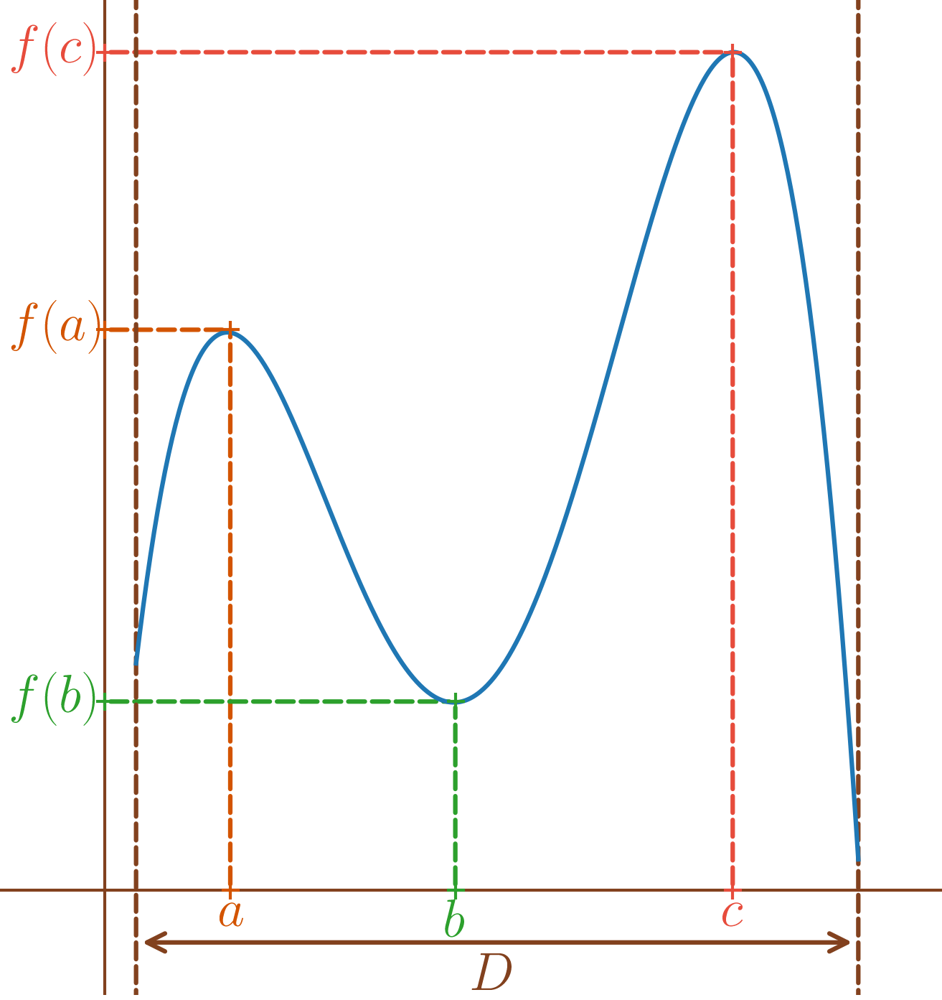
(Continuité) Soit \(f \in \mathscr{F}(I,\mathbb{R})\) avec \(I\) intervalle de \(\mathbb{R}\). Soit \(x_0 \in I\), \(f\) est continue en \(x_0\) si \[\forall \varepsilon >0, \exists \eta_\varepsilon >0/ \forall x\in I, |x-x_0| \leq \eta_\varepsilon \Longrightarrow \left|f(x)-f(x_0)\right| \leq \varepsilon.\]
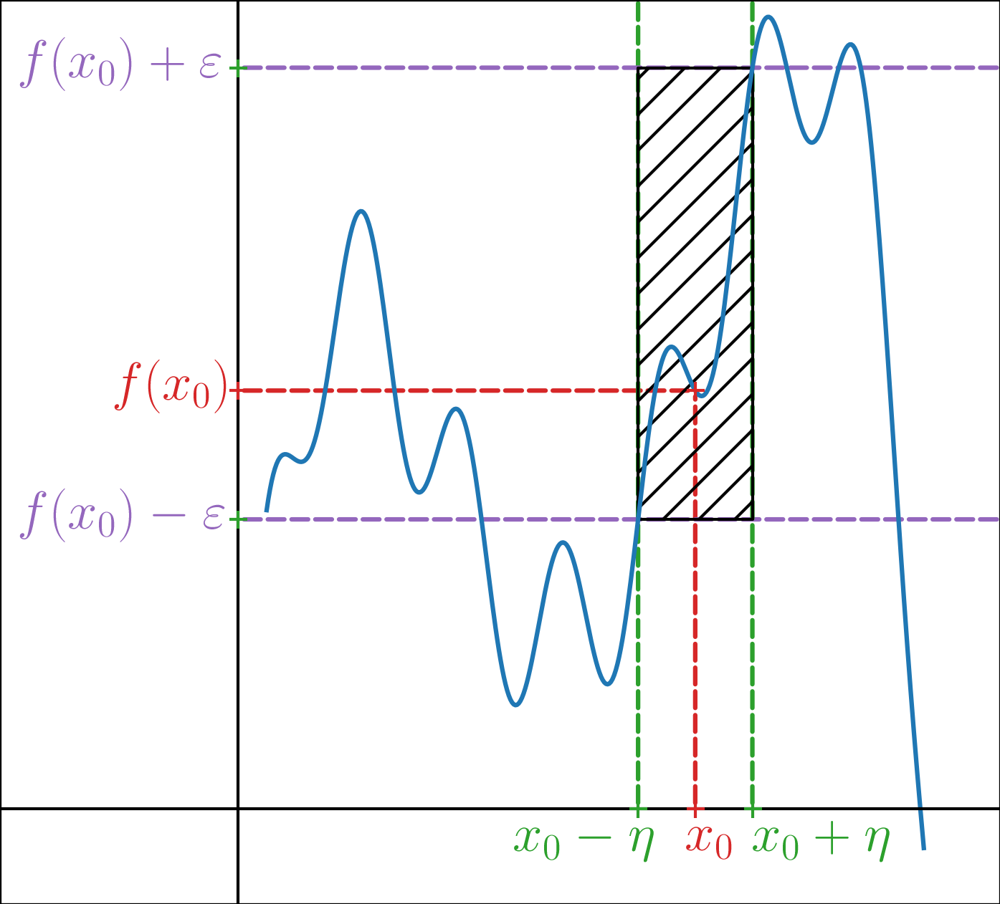
De la même façon que pour les limites de suites, on peut faire la remarque suivante. Soit \(C > 0\), \[f \text{ continue en $x_0\in I$} \iff \forall \varepsilon >0, \exists \eta_\varepsilon >0/ \forall x\in I, |x-x_0| \leq \eta_\varepsilon \Longrightarrow \left|f(x)-f(x_0)\right| \leq C\varepsilon.\]
Montrons que \(f : x \in \mathbb{R}^{+}\mapsto \sqrt{x}\) est continue en tout point de \(\mathbb{R}^{+}\). Soit \(x_0 \in \mathbb{R}^{+}\) et \(\varepsilon > 0\).
Si \(x_0 = 0\), Alors avec \(\eta_\varepsilon = \varepsilon^2 > 0\), \[|x|=x \leq \eta_\varepsilon \Longrightarrow \sqrt{x} \leq \sqrt{\eta_\varepsilon} = \sqrt{\varepsilon^2} = \varepsilon \text{ car $\varepsilon \geq 0$}.\]
Si \(x_0 > 0\), pour \(x \in \mathbb{R}^{+}\), en multipliant par la quantité conjuguée, \[|\sqrt{x}-\sqrt{x_0}| = \left|\frac{(\sqrt{x}-\sqrt{x_0})(\sqrt{x}+\sqrt{x_0})}{\sqrt{x}+\sqrt{x_0}}\right| = \left|\frac{x-x_0}{\sqrt{x}+\sqrt{x_0}}\right| \leq \frac{|x-x_0|}{\sqrt{x_0}}.\]
Donc pour \(\eta_\varepsilon = \sqrt{x_0}\varepsilon\), \[|x-x_0| \leq \eta_\varepsilon \Longrightarrow |\sqrt{x}-\sqrt{x_0}|\leq \frac{\eta_\varepsilon}{\sqrt{x_0}} = \varepsilon.\]
(Continuité à gauche/droite) Soit \(f \in \mathscr{F}(I,\mathbb{R})\) avec \(I\) intervalle de \(\mathbb{R}\). Soit \(x_0 \in I\),
\(f\) est continue à gauche en \(x_0\) si \[\forall \varepsilon >0, \exists \eta_\varepsilon >0/ \forall x\in I, |x-x_0| \leq \eta_\varepsilon \text{ et }x \leq x_0 \Longrightarrow \left|f(x)-f(x_0)\right| \leq \varepsilon.\]
\(f\) est continue à droite en \(x_0\) si \[\forall \varepsilon >0, \exists \eta_\varepsilon >0/ \forall x\in I, |x-x_0| \leq \eta_\varepsilon \text{ et }x \geq x_0 \Longrightarrow \left|f(x)-f(x_0)\right| \leq \varepsilon.\]
Soit \(f \in \mathscr{F}(I,\mathbb{R})\) avec \(I\) intervalle de \(\mathbb{R}\). Soit \(x_0 \in I\), \[\text{$f$ continue en $x_0$ } \iff \text{$f$ continue à gauche et à droite en $x_0$ }\]
(\(\Longrightarrow\)) Pour \(\varepsilon >0\), il existe \(\eta_\varepsilon >0\) tel que pour tout \(x\in I\), \[|x-x_0| \leq \eta_\varepsilon \Longrightarrow \left|f(x)-f(x_0)\right| \leq \varepsilon.\] Donc a fortiori, pour tout \(x\in I\), \[|x-x_0| \leq \eta_\varepsilon \text{ et }x \leq x_0 \Longrightarrow \left|f(x)-f(x_0)\right| \leq \varepsilon\] donc \(f\) continue à gauche en \(x_0\) et pour tout \(x\in I\), \[|x-x_0| \leq \eta_\varepsilon \text{ et }x \geq x_0 \Longrightarrow \left|f(x)-f(x_0)\right| \leq \varepsilon\] donc \(f\) continue à droite en \(x_0\).
(\(\Longleftarrow\)) Pour \(\varepsilon >0\), il existe \(\eta_\varepsilon^- >0\) tel que pour tout \(x\in I\), \[|x-x_0| \leq \eta_\varepsilon^- \text{ et }x \leq x_0 \Longrightarrow \left|f(x)-f(x_0)\right| \leq \varepsilon\] et il existe \(\eta_\varepsilon^+ >0\) tel que pour tout \(x\in I\), \[|x-x_0| \leq \eta_\varepsilon^+ \text{ et }x \geq x_0 \Longrightarrow \left|f(x)-f(x_0)\right| \leq \varepsilon\] Donc, a fortiori, pour tout \(x\in I\), \[|x-x_0| \leq \min(\eta_\varepsilon^-,\eta_\varepsilon^+) \Longrightarrow \left|f(x)-f(x_0)\right| \leq \varepsilon.\] et \(f\) est continue en \(x_0\).
(Un exemple de fonction à gauche en un point mais non continue en ce point)
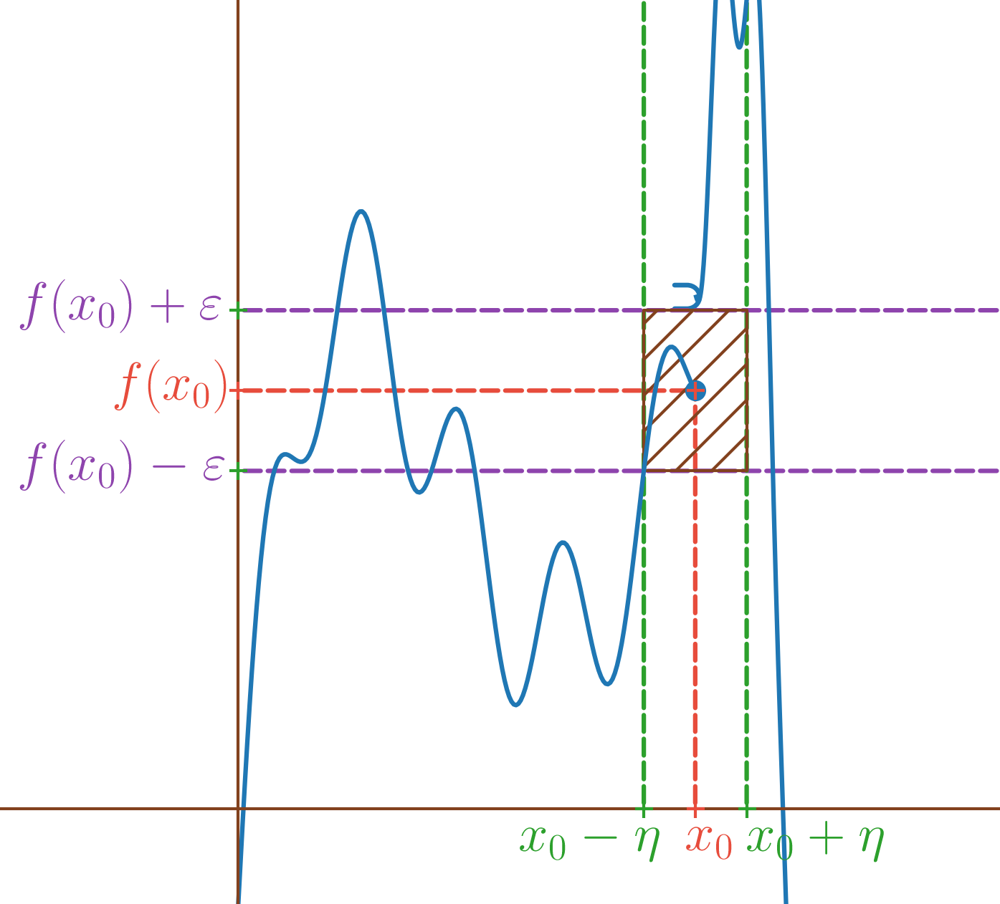
Soit \(f \in \mathscr{F}(I,\mathbb{R})\) et \(x_0\in I\).
Alors, \(f\) continue en \(x_0\) si et seulement si pour toute suite \((u_n)\) d’éléments de \(I\) telle que \(u_n \longrightarrow x_0\) alors \(f(u_n) \longrightarrow f(x_0)\).
\((\Longrightarrow)\)
Si \(f\) est continue en \(0\), soit \(\varepsilon >0\), il existe \(\eta_\varepsilon >0\) tel que pour tout \(x\in I\), \[|x-x_0| \leq \eta_\varepsilon \Longrightarrow \left|f(x)-f(x_0)\right| \leq \varepsilon.\]
De plus, soit \((u_n)\) suite d’éléments de \(I\) telle que \(u_n \longrightarrow x_0\), il existe \(N \geq 0\) tel que pour tout \(n\geq N\), \[|u_n - x_0| \leq \eta_{\varepsilon}.\]
On en déduit donc que pour tout \(n\geq N\), \[|u_n - x_0| \leq \eta_{\varepsilon} \Longrightarrow |f(u_n) - f(x_0)| \leq \varepsilon.\]
Donc que la suite \((f(u_n))\) tend vers \(f(x_0)\).
\((\Longleftarrow)\) Procédons par contraposée. Si \(f\) n’est pas continue en \(x_0\), il existe \(\varepsilon_0 > 0\) tel que \[\forall \eta > 0, \exists x_\eta \in I / |x_\eta-x_0| \leq \eta \text{ et }|f(x_\eta)-f(x_0)| > \varepsilon_0.\]
Construisons alors une suite ainsi : pour \(\eta = \frac{1}{n}\), on définit \(u_n \in I\) tel que \[|u_n-x_0| \leq \frac{1}{n} \text{ et }|f\left(u_n\right)-f(x_0)| > \varepsilon_0.\]
On a alors \(u_n \longrightarrow x_0\) et \(f(u_n) \not\longrightarrow f(x_0)\).
Exercice — Soient \(a_0,\ldots,a_d \in \mathbb{R}\), montrer que \(f : x \in \mathbb{R}\mapsto \sum_{k=0}^d a_k x^k\) est continue en tout point de \(\mathbb{R}\).
Corrigé — Soit \(x_0\in \mathbb{R}\) et \((u_n)\) suite de \(\mathbb{R}\) telle que \(u_n \longrightarrow x_0\). Alors, par produits de limites, \[\begin{aligned} \forall k \in [\![ 0,d ]\!], & u_n^k \longrightarrow x_0^k \\ \forall k \in [\![ 0,d ]\!], & a_ku_n^k \longrightarrow a_kx_0^k \\ \end{aligned}\] Donc par somme de limites, \[f(u_n) = \sum_{k=0}^d a_k u_n^k \longrightarrow \sum_{k=0}^d a_k x_0^k = f(x_0).\]
Donc \(f\) est continue en tout point de \(\mathbb{R}\).
Soit \(f : x \in [0,2] \mapsto \begin{cases} 1 & \mbox{ si } x \in [0,1] \\ x-1 & \mbox{ si } x \in ]1,2]. \end{cases}\), montrons que \(f\) n’est pas continue en \(1\).
On a \(f(1) = 1\). Pourtant en considérant \((u_n)\) définie par \(u_n = 1+\frac{1}{n+1}\) pour \(n \geq 0\), on a \(u_n \longrightarrow 1\)et \(f(u_n) = 1+\frac{1}{n+1}-1 = \frac{1}{n+1} \longrightarrow 0\).
Donc \(f\) n’est pas continue en \(1\).
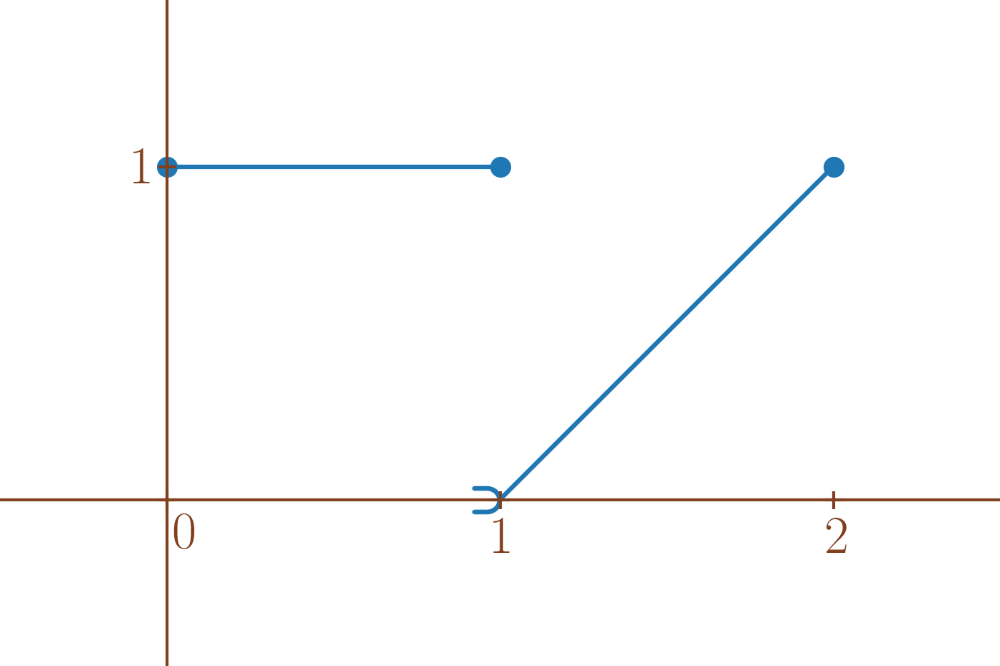
Soit \(f \in \mathscr{F}(I,\mathbb{R})\) avec \(I\) intervalle de \(\mathbb{R}\) et \(x_0 \in I\).
Si \(f\) est continue en \(x_0\) alors \(f\) est bornée "au voisinage de \(x_0\)" ie \[\exists r > 0, M \geq 0 / \forall x \in I, |x-x_0| \leq r \Longrightarrow |f(x)| \leq M.\]
Avec \(\varepsilon=1\), il existe \(\eta > 0\) tel que pour tout \(x \in I\), \[|x-x_0| \leq \eta \Longrightarrow |f(x)-f(x_0)| \leq 1.\]
Donc, avec \(r = \eta\) et \(M = 1+|f(x_0)|\), pour tout \(x\in I\), \[|x-x_0| \leq \eta \Longrightarrow |f(x)-f(x_0)| = |f(x)-f(x_0)+f(x_0)| \leq |f(x)-f(x_0)|+ |f(x_0)| \leq 1+|f(x_0)| = M.\]
Si \(f\) est continue en \(x_0\) alors \(|f| : x \in I \mapsto |f(x)|\) est continue en \(x_0\).
Soit \((u_n)\) suite de \(I\) telle que \(u_n \longrightarrow x_0\) alors \(f(u_n) \longrightarrow f(x_0)\) donc \(|f(u_n)| \longrightarrow |f(x_0)|\).
On en déduit que \(|f|\) est continue en \(x_0\).
Si \(f\) est continue en \(x_0\) avec \(f(x_0) > 0\),
il existe \(\alpha > 0\) et \(r > 0\) tels que pour tout \(x \in I\),
\[|x-x_0| \leq r \Longrightarrow f(x) > \alpha.\]
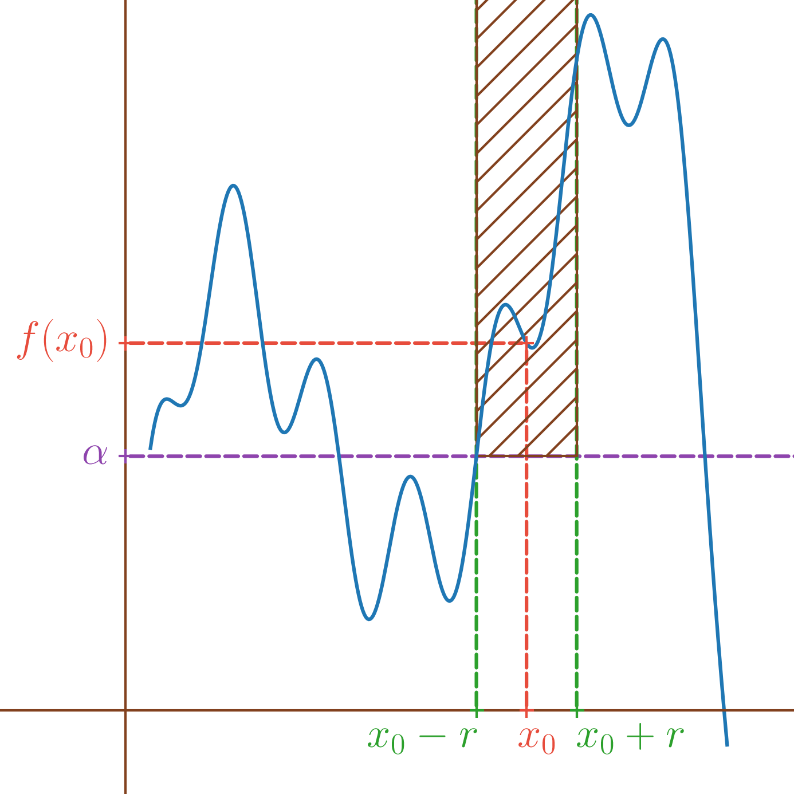
Soit \(\beta \in ]0,f(x_0)[\), comme \(f\) est continue en \(x_0\), il existe \(\eta > 0\) tel que pour tout \(x \in I\), \[|x-x_0| \leq \eta \Longrightarrow |f(x)-f(x_0)| \leq \beta.\]
On a donc avec \(r = \eta\), pour tout \(x \in I\), \[\begin{aligned} |x-x_0| \leq r & \Longrightarrow |f(x)-f(x_0)| \leq \beta \\ & \Longrightarrow f(x)-f(x_0) \geq - \beta \\ & \Longrightarrow f(x) \geq \underbrace{f(x_0)-\beta}_{=\alpha} > 0 \text{ car $\beta < f(x_0)$}. \end{aligned}\]
Soient \(f,g \in \mathscr{F}(I,\mathbb{R})\) et \(x_0 \in I\) tel que \(f\) et \(g\) sont continues en \(x_0\). Alors,
\(f+g\) est continue en \(x_0\),
pour tout \(\alpha \in \mathbb{R}\), \(\alpha f\) est continue en \(x_0\),
\(fg\) est continue en \(x_0\).
Soit \((u_n)\) suite de \(I\) telle que \(u_n \longrightarrow x_0\).
\(f(u_n) \longrightarrow f(x_0)\) et \(g(u_n) \longrightarrow g(x_0)\) donc \((f+g)(u_n) = f(u_n)+g(u_n) \longrightarrow f(x_0)+g(x_0) = (f+g)(x_0)\).
\(f(u_n) \longrightarrow f(x_0)\) donc \((\alpha f)(u_n) = \alpha f(u_n) \longrightarrow \alpha f(x_0) = (\alpha f)(x_0)\).
\(f(u_n) \longrightarrow f(x_0)\) et \(g(u_n) \longrightarrow g(x_0)\) donc \((fg)(u_n) = f(u_n)g(u_n) \longrightarrow f(x_0)g(x_0) = (fg)(x_0)\).
Soient \(f \in \mathscr{F}(I,\mathbb{R})\) et \(x_0 \in I\) tel que \(f\) est continue en \(x_0\) avec \(f(x_0) > 0\).
Pour rappel, il existe \(r> 0, \alpha > 0\) tels que pour tout \(x\in I\), \[|x-x_0| \leq r \Longrightarrow f(x_0) > \alpha.\]
Donc \(\frac{1}{f}\) est définie "au voisinage de \(x_0\)" et est continue en \(x_0\).
\(\frac{1}{f}\) est définie sur \(I \cap ]x_0-r,x_0+r[\). Soit \((u_n)\) une suite de \(I \cap ]x_0-r,x_0+r[\) telle que \(u_n \longrightarrow x_0\).
Alors, pour tout \(n\geq 0, f(u_n) \geq \alpha > 0\) et \(f(u_n) \longrightarrow f(x_0)\).
Donc \(\frac{1}{f(u_n)} \longrightarrow f(x_0)\).
Soit \(f \in \mathscr{F}(I,\mathbb{R})\) et \(x_0 \in I\). Soit \(g \in \mathscr{F}(J,\mathbb{R})\) avec \(J\) intervalle de \(\mathbb{R}\) et tel que \(f(I) \subset J\).
Si \(f\) est continue en \(x_0\) et \(g\) continue en \(f(x_0)\) alors \(g \circ f\) est continue en \(x_0\).
Soit \((u_n)\) suite de \(I\) telle que \(u_n \longrightarrow x_0\).
Alors \(f(u_n) \longrightarrow f(x_0)\) car \(f\) continue en \(x_0\).
De plus, \((f(u_n))\) est une suite de \(J\) et comme \(g\) est continue en \(f(x_0)\), on a \(g\circ f(u_n) = g(f(u_n)) \longrightarrow g(f(x_0)) = g\circ f(x_0)\) donc \(g\circ f\) continue en \(x_0\).
Soit \(f \in \mathscr{F}(I,\mathbb{R})\). On dit que \(f\) est continue sur \(I\) si \(f\) est continue en tout point \(x_0\) de \(I\).
On note \(\mathscr{C}(I,\mathbb{R})\), l’ensemble des fonctions de \(I\) dans \(\mathbb{R}\) continues sur \(I\).
Pour rappel,
Si \(f,g \in \mathscr{C}(I,\mathbb{R}), \alpha \in \mathbb{R}\) alors \(f+g, fg, \alpha f \in \mathscr{C}(I,\mathbb{R})\).
Si \(f \in \mathscr{C}(I,\mathbb{R})\) avec \(\forall x \in I, f(x) \neq 0\) alors \(\frac{1}{f} \in \mathscr{C}(I,\mathbb{R})\).
Si \(f \in \mathscr{C}(I,\mathbb{R}) \text{ et }g \in \mathscr{C}(J,\mathbb{R})\) avec \(f(I) \subset J\) alors \(g \circ f \in \mathscr{C}(I,\mathbb{R})\).
Soit \(f \in \mathscr{C}(I,\mathbb{R})\), \(f\) est lipschitzienne sur \(I\) s’il existe \(C \geq 0\) tel que \[\forall x,x' \in I, |f(x)-f(x')| \leq C|x-x'|.\]
Dans ce cas, \(f\) est dite \(C\)-lipschitzienne sur \(I\).
Si \(f\) est lipschitzienne sur \(I\), \(f \in \mathscr{C}(I,\mathbb{R})\).
\(f\) est lipschitzienne sur \(I\) donc il existe \(C \geq 0\) tel que \[\forall x,x' \in I, |f(x)-f(x')| \leq C|x-x'|.\] Soit \(x_0 \in I\).
Si \(C = 0\), \(\forall x \in I, |f(x)-f(x_0)| = 0 \iff f(x) = f(x_0)\) donc \(f\) est constante sur \(I\) et donc continue.
Si \(C > 0\), soit \(\varepsilon > 0\), on pose \(\eta = \frac{\varepsilon}{C}\). On a alors, pour tout \(x \in I\),
\[|x-x_0| \leq \eta \Longrightarrow |f(x)-f(x_0)| \leq C|x-x_0| \leq C\eta = \varepsilon.\]
Donc \(f\) est continue en \(x_0\).
Soit \(f : x \in \mathbb{R}\mapsto ax+b\) avec \(a,b \in \mathbb{R}\). Alors, \[\forall x,x' \in \mathbb{R}, |f(x)-f(x')| = |a(x-x')| \leq |a||x-x'|\] donc \(f\) est \(|a|\)-lipschitzienne sur \(\mathbb{R}\).
Soit \(a > 0\) et \(g : x \in [a,+\infty[ \mapsto \sqrt{x}\). Alors, en multipliant par la quantité conjuguée, \[\forall x,x' \in [a,+\infty[ , |g(x)-g(x')| = |\sqrt{x}-\sqrt{x'}| = \frac{|x-x'|}{\sqrt{x}+\sqrt{x'}} \leq \frac{1}{2\sqrt{a}}|x-x'|\] donc \(g\) est \(\frac{1}{2\sqrt{a}}\)-lipschitzienne sur \([a,+\infty[\).
En revanche, montrons que \(h : x \in \mathbb{R}^{+}\mapsto \sqrt{x}\) n’est pas lipschitzienne sur \(\mathbb{R}^{+}\).
En effet, supposons par l’absurde qu’il existe \(C > 0\) (\(C\neq 0\) car \(h\) non constante) tel que \[\forall x,x' \in \mathbb{R}^{+}, |h(x)-h(x')| = |\sqrt{x}-\sqrt{x'}| \leq C|x-x'|.\]
Alors, en prenant \(x' = 0\), on a \[\forall x \in \mathbb{R}^{+\star}, \sqrt{x} \leq C |x| \Longrightarrow \frac{1}{C} \leq \sqrt{x} \Longrightarrow \frac{1}{C^2} \leq x.\]
Ce qui est absurde en prenant \(x = \frac{1}{2C^2}\).
Donc \(h\) n’est pas lipschitzienne sur \(\mathbb{R}^{+}\) bien qu’elle y soit continue.
(Convexité des intervalles de \(\mathbb{R}\) (admise)) Soit \(I \subset \mathbb{R}\), partie non vide de \(\mathbb{R}\). \[I \text{intervalle de $\mathbb{R}$} \iff \forall a,b \in I \text{ tels que }a \leq b, [a,b] \subset I.\]
(Théorème des valeurs intermédiaires) Soit \(f \in \mathscr{C}(I,\mathbb{R})\) (), soit \(a,b \in I\) tels que \(a \leq b\), On pose \(\alpha = f(a)\) et \(\beta = f(b)\) tels que \(\alpha \leq \beta\) (ou \(\beta \leq \alpha\)).
Alors, soit \(\gamma \in [\alpha, \beta]\) (ou \(\gamma \in [\beta,\alpha]\)), il existe \(c \in [a,b]\) tel que \(f(c) = \gamma\).
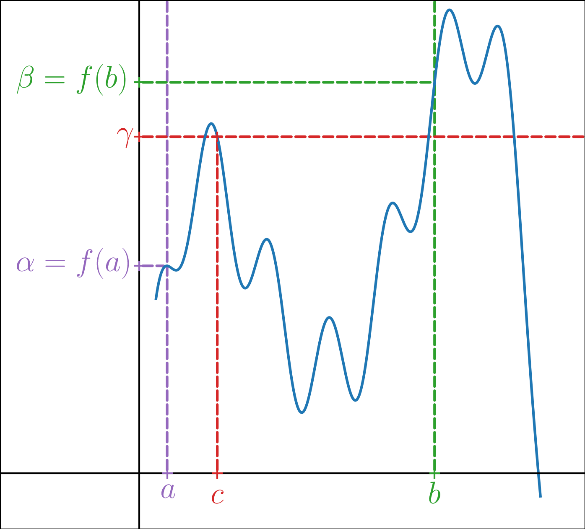
Nous allons faire une preuve "constructive", par dichotomie, en construisant deux suites adjacentes \((a_n), (b_n)\) telles que \(a_n \leq b_n\) pour tout \(n \geq 0\), \(a_n \longrightarrow c, b_n \longrightarrow c\) et \(f(a_n)\longrightarrow \gamma, f(b_n) \longrightarrow \gamma\). On aura donc, par continuité de \(f\), \(f(c) = \gamma\).
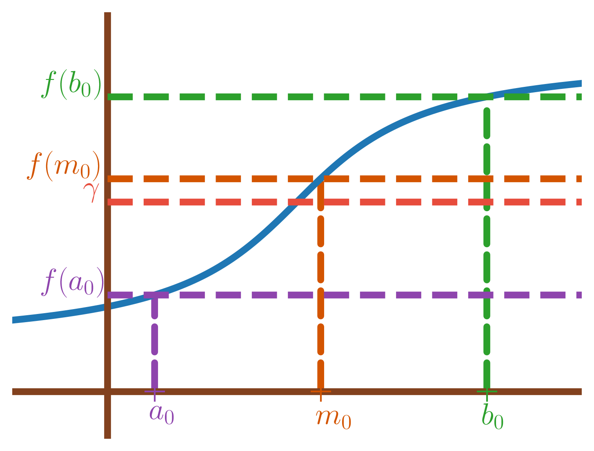 |
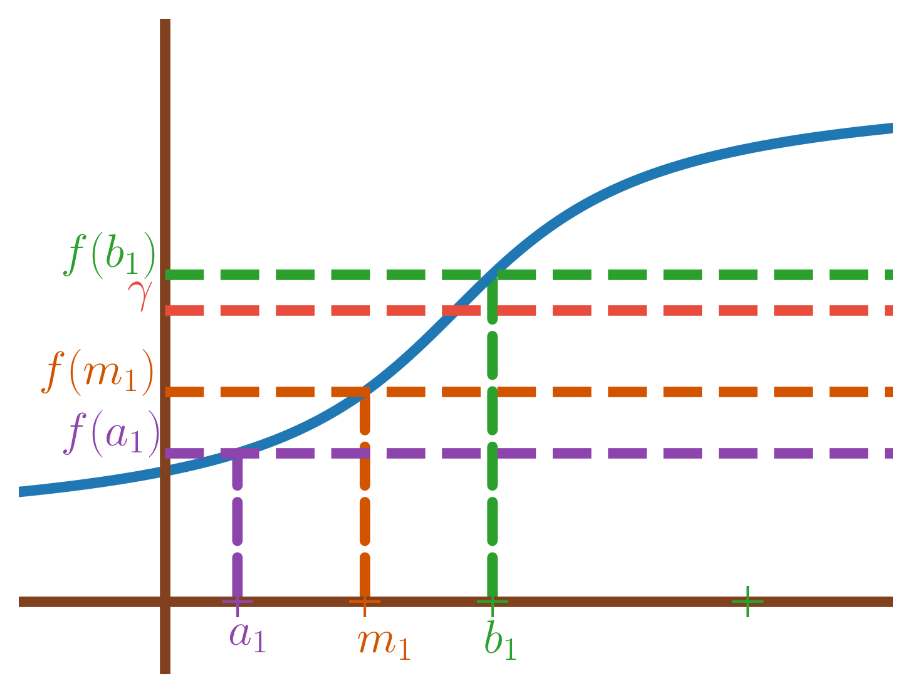 |
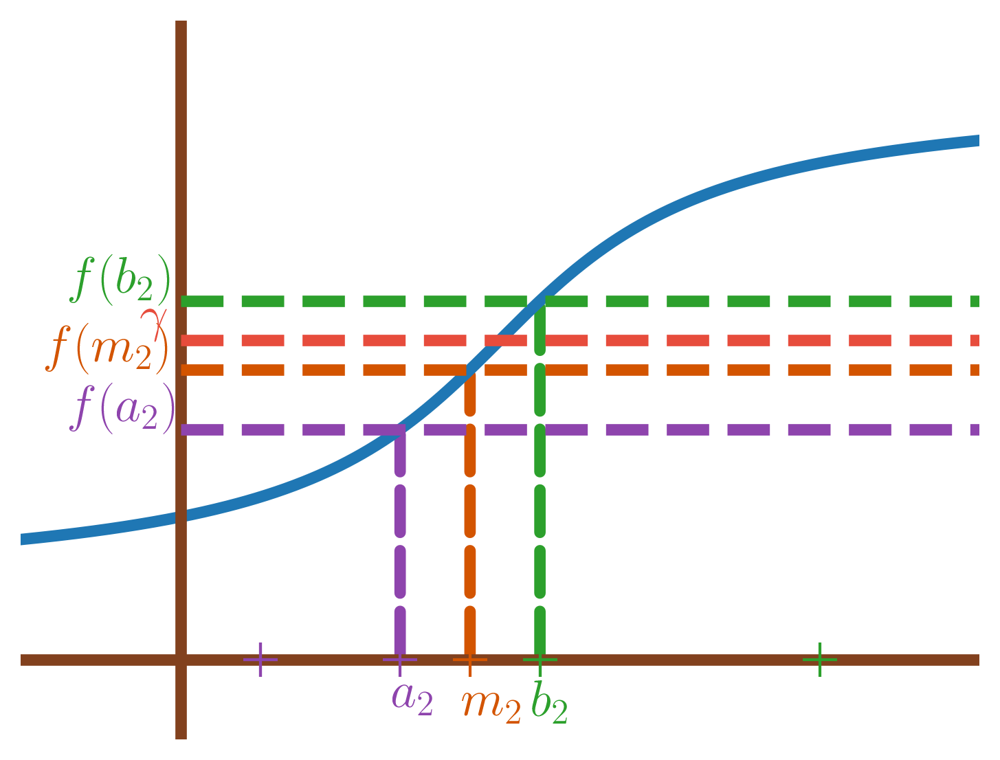 |
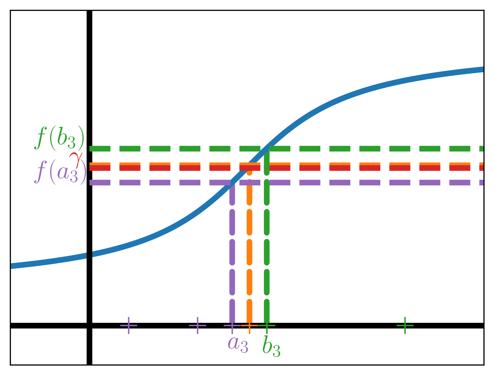 |
Notons que \([a,b] \subset I\) car \(I\) est un intervalle de \(\mathbb{R}\). On suppose dans la preuve, \(\alpha \leq \beta\).
\(\mathbf{(n=0)}.\) On pose \(a_0 = a\), \(b_0 = b\). On a alors
\(\alpha = f(a_0) \leq \gamma \leq f(b_0) = \beta\),
\(b_0-a_0 = b-a \geq 0\).
\(\mathbf{(n=1)}.\) On pose \(m_0 = \frac{a_0+b_0}{2}\).
Si \(\gamma \leq f(m_0)\), on pose \(a_1 = a_0\) et \(b_1 = m_0\). On a alors,
\(\alpha = f(a_1) \leq \gamma \leq f(b_1) = f(m_0)\),
\(b_1-a_1 = m_0-a = \frac{a+b}{2}-a =\frac{b-a}{2}\),
\(b_1 = m_0 \leq b_0\) et \(a_1 = a \geq a_0\).
Si \(\gamma > f(m_0)\), on pose \(a_1 = m_0\) et \(b_1 = b_0\). On a alors,
\(f(m_0)= f(a_1) \leq \gamma \leq f(b_1) = \beta\),
\(b_1-a_1 = b-m_0 = b-\frac{a+b}{2} =\frac{b-a}{2}\geq 0\),
\(b_1 = b \leq b_0\) et \(a_1 = m_0 \geq a_0\).
(Hérédité). Soit \(n \in \mathbb{N}^{\star}\), supposons \(a_0,\ldots,a_n\) et \(b_0,\ldots,b_n\) construits tels que
\(\forall n \in [\![ 0, n]\!]\), \(f(a_n) \leq \gamma \leq f(b_n)\),
\(\forall n \in [\![ 0, n]\!]\), \(b_n-a_n =\frac{b-a}{2^n}\geq 0\),
\(b_n \leq b_{n-1} \leq \ldots \leq b_1 \leq b_0\) et \(a_n \geq a_{n-1} \geq \ldots \geq a_1 \geq a_0\).
Construisons \(a_{n+1}\) et \(b_{n+1}\). On pose \(m_n = \frac{a_n+b_n}{2}\).
Si \(\gamma \leq f(m_n)\), on pose \(a_{n+1}= a_n\) et \(b_{n+1}= m_n\). On a alors,
\(f(a_n) = f(a_{n+1}) \leq \gamma \leq f(b_{n+1}) = f(m_n)\),
\(b_{n+1}-a_{n+1} = m_{n}-a_n = \frac{a_n+b_n}{2}-a_n =\frac{b_n-a_n}{2} = \frac{b-a}{2^{n+1}}\),
\(b_{n+1} = m_n \leq b_n\) et \(a_{n+1} = a_n \geq a_n\).
Si \(\gamma > f(m_n)\), on pose \(a_{n+1} = m_n\) et \(b_{n+1} = b_n\). On a alors,
\(f(m_n)= f(a_{n+1}) \leq \gamma \leq f(b_{n+1}) = f(b_n)\),
\(b_{n+1}-a_{n+1} = b_n-m_{n} = b_n-\frac{a_n+b_n}{2} =\frac{b_n-a_n}{2} = \frac{b-a}{2^{n+1}}\),
\(b_{n+1} = b_n \leq b_n\) et \(a_{n+1} = m_n \geq a_n\).
On a donc construits par récurrence des suites \((a_n)\) et \((b_n)\) de \(I\) telles que
\(\forall n \in N, f(a_n) \leq \gamma \leq f(b_n)\),
\(\forall n \in \mathbb{N}\), \(b_n-a_n =\frac{b-a}{2^n}\geq 0\),
\((b_n)\) décroissante et \((a_n)\) croissante.
En particulier, on a
\(\forall n \in \mathbb{N}\), \(a_n \leq b_n\),
\(\forall n \in \mathbb{N}\), \(b_n-a_n =\frac{b-a}{2^n} \longrightarrow 0\),
\((b_n)\) décroissante et \((a_n)\) croissante.
Donc \((a_n)\) et \((b_n)\) sont des suites adjacentes et admettent une limite commune \(c \in \mathbb{R}\). De plus, par passage à la limite dans l’inégalité, \(a = a_0 \leq c \leq b = b_0\) donc \(c \in [a,b]\).
Comme \(f\) est continue sur \(I\), on a \(f(a_n) \longrightarrow f(c)\) et \(f(b_n) \longrightarrow f(c)\) et on déduit de \[\forall n \in N, f(a_n) \leq \gamma \leq f(b_n)\] que \(f(c) = \gamma\).
Soit \(f \in \mathscr{C}(I,\mathbb{R})\) avec \(I\) intervalle de \(\mathbb{R}\) alors \(f(I)\) est un intervalle de \(\mathbb{R}\).
Si \(f\) n’est pas continue, en général \(f(I)\) n’est pas un intervalle de \(\mathbb{R}\).
Par exemple, avec \(f : x \in [0,2] \mapsto \begin{cases} x & \mbox{ si } x \in [0,1] \\ x+1 & \mbox{ si } x \in ]1,2]. \end{cases}\), \(f([0,2]) = [0,1] \cup ]2,3]\).
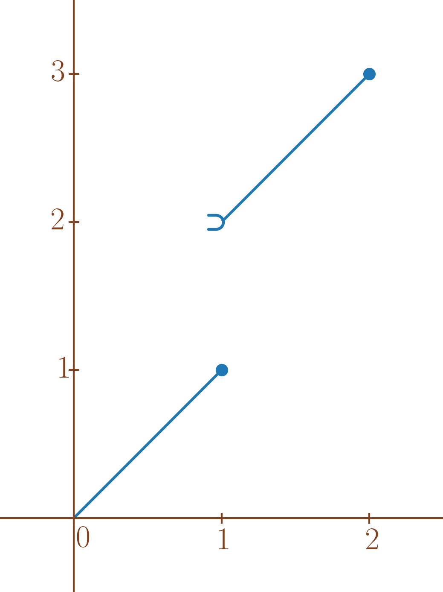
Exercice — Soit \(f: [a,b] \to [a,b]\) continue. Montrer que \(f\) admet un point fixe sur \([a,b]\) ie il existe \(x_0 \in [a,b]\) tel que \(f(x_0)=x_0\).
Corrigé —
Il faut bien lire l’énoncé et constater que \(f([a,b]) \subset [a,b]\).
On remarque que pour \(x \in [a,b]\),
\(f(x) = x \iff f(x)-x = 0 \iff g(x) = 0\)
\(\text{ avec }g : x \in [a,b] \mapsto f(x)-x\).
De plus,
\(g\) est continue sur \([a,b]\),
\(g(a) = f(a)-a \geq a-a = 0\),
\(g(b) = f(b)-b \leq b-b = 0\).
Donc par théorème des valeurs intermédiaires, il existe \(x_0 \in [a,b]\) tel que \(g(x_0) = 0 \iff f(x_0) = x_0\).
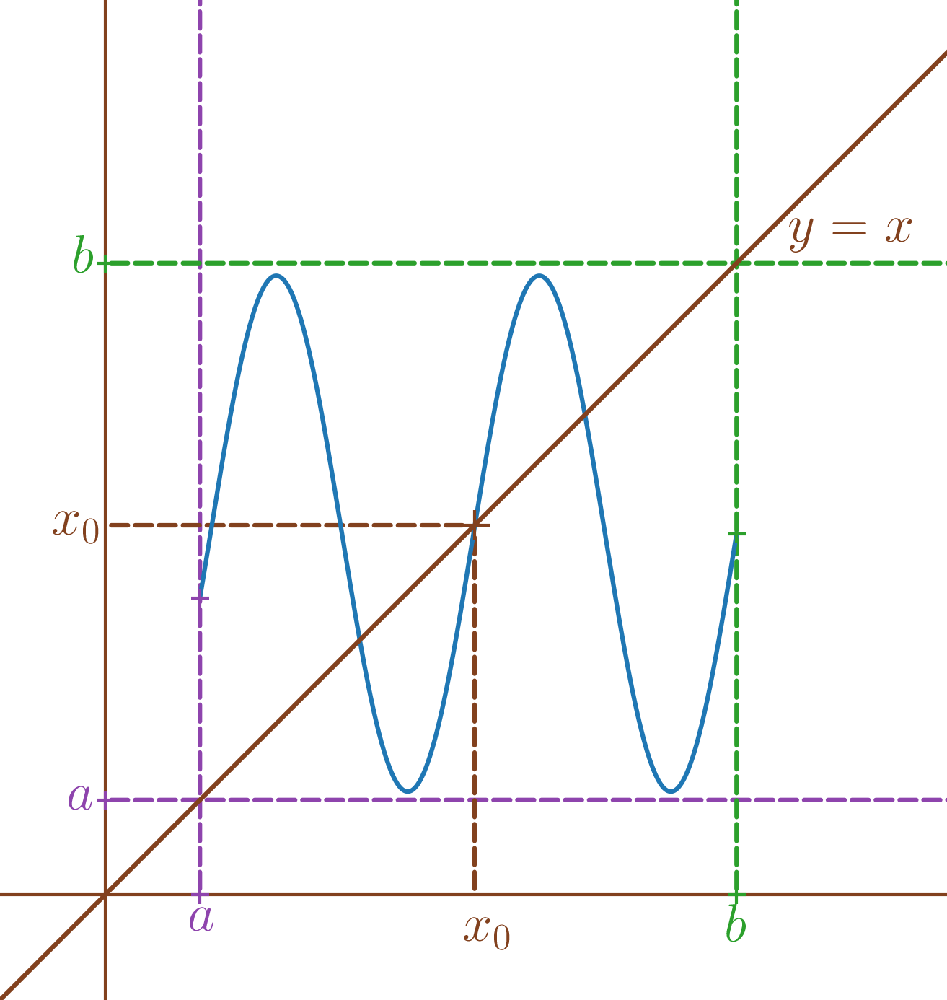
Soit \(f : [a,b] \to \mathbb{R}\), continue sur \([a,b]\) (avec \(a \leq b\)). Alors \(f\) est bornée sur \([a,b]\).
Par l’absurde, supposons que \(f\) n’est pas bornée sur \([a,b]\) et donc que \[\forall M \in \mathbb{R}^+, \exists x_M \in [a,b] / |f(x_M)| > M.\]
Prenons \(M = n\) et construisons \((u_n)\) suite de \([a,b]\) telle que \[\forall n \geq 0, |f(x_n)| > n.\]
On a donc \(|f(u_n)| \longrightarrow + \infty\).
Or, \((u_n)\) est une suite de \([a,b]\), elle est donc bornée et par théorème de Bolzano-Weierstrass, il existe \(\varphi:\mathbb{N}\to \mathbb{N}\) une extraction telle que \((u_{\varphi(n)})\) converge vers un réel \(c \in \mathbb{R}\). De plus, \(|f(u_{\varphi(n)})| \longrightarrow + \infty\) et comme \[\forall n \in \mathbb{N}, a \leq u_{\varphi(n)}\leq b,\] on a \(c \in [a,b]\) et par continuité de \(f\), \(|f(u_n)| \longrightarrow |f(c)|\), ce qui est contradictoire.
Donc \(f\) est bornée sur \([a,b]\).
Si \(f\) est non continue sur \([a,b]\), en général \(f\) est non bornée sur \([a,b]\) comme l’illustre par exemple \(f : x \in [0,1] \mapsto \begin{cases} \frac{1}{x}& \mbox{ si $x \in ]0,1]$} \\ 0 & \mbox{ si $x=0$}. \end{cases}\)
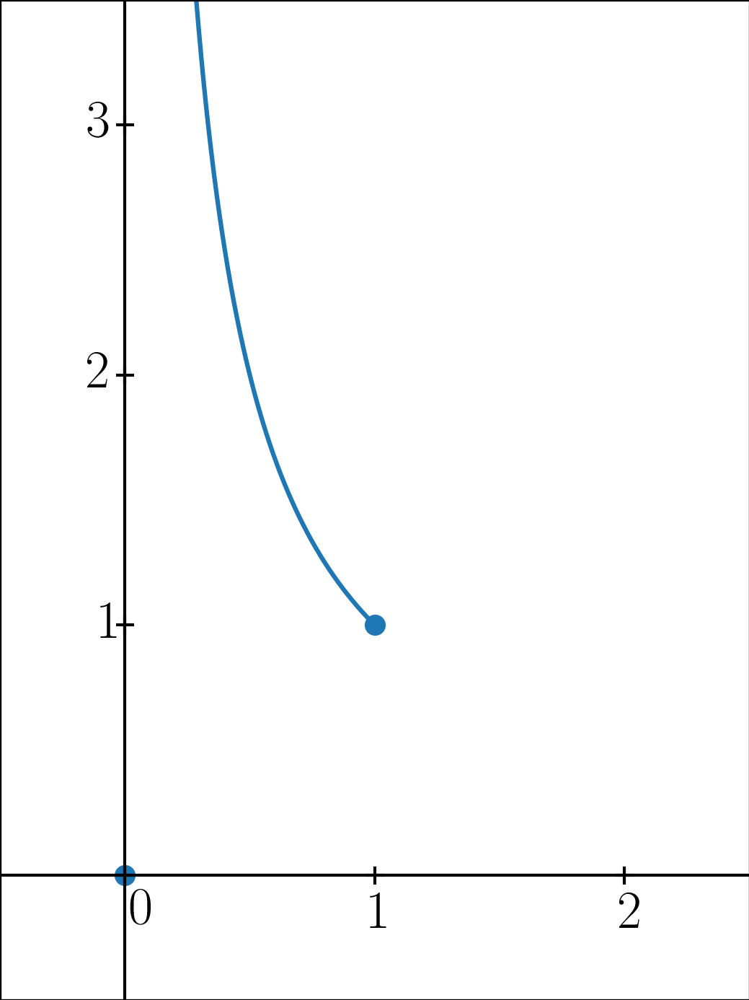
Si \(f\) est non continue sur \(]a,b]\) , en général \(f\) est non bornée sur \(]a,b]\) comme l’illustre par exemple \(f : x \in ]0,1] \mapsto \frac{1}{x}\).
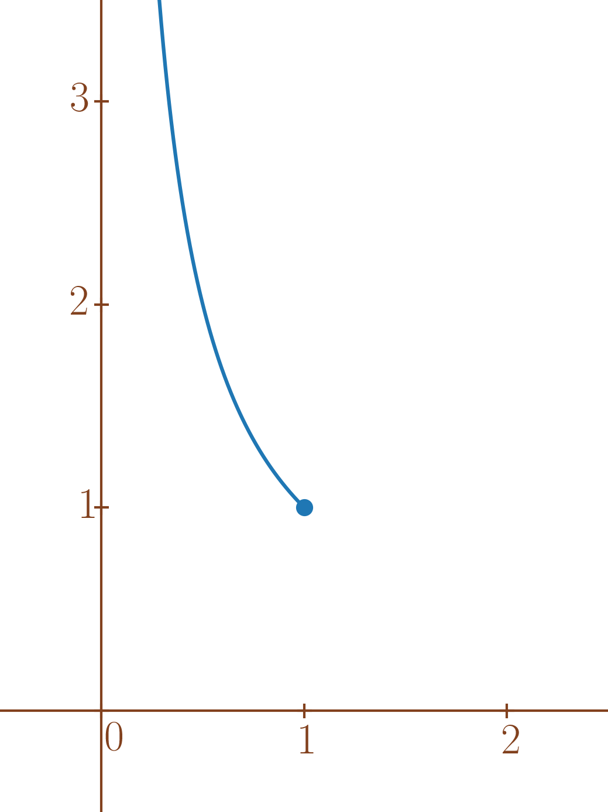
Soit \(f : [a,b] \to \mathbb{R}\) continue.
Alors, \(f\) est bornée et \(M = \sup_{x \in [a,b]} f(x)\) et \(m = \inf_{x \in [a,b]} f(x)\) existe.
De plus, \[\begin{aligned} \text{Il existe } x_0 \in [a,b] \text{ tel que }f(x_0) & = M. \\ \text{Il existe } x_1 \in [a,b] \text{ tel que }f(x_1) & = m. \end{aligned}\]
Donc, \(M = \max_{x \in [a,b]} f(x)\) et \(m = \min_{x \in [a,b]} f(x)\).
Prouvons le résultat pour \(M = \sup_{x\in [a,b]} f(x)\) et la preuve est identique pour la borne inférieure.
Comme \(M = = \sup_{x\in [a,b]} f(x)\), par caractérisation de la borne supérieure, pour tout \(\varepsilon > 0\), il existe \(x_\varepsilon \in [a,b]\) tel que \(f(x_\varepsilon) > M-\varepsilon\).
Pour \(n\in \mathbb{N}^{\star}\), prenons \(\varepsilon = \frac{1}{n}\) et \(u_n \in [a,b]\) tel que \[f(u_n) > M-\frac{1}{n}.\] Alors, comme \((u_n)\) est une suite de \([a,b]\), donc bornée, par théorème de Bolzano-Weierstrass, il existe \(\varphi : \mathbb{N}\to \mathbb{N}\) extraction telle que \((u_{\varphi(n)})\) admet une limite \(\ell \in \mathbb{R}\) et de plus \(\ell \in [a,b]\).
On a donc \(f(u_{\varphi(n)}) \longrightarrow f(\ell)\) par continuité de \(f\) et pour tout \(n \in \mathbb{N}^{\star}\), \[M-\frac{1}{n} < f(u_n) \leq M.\] Donc par passage à la limite, \(M = f(\ell)\) avec \(\ell \in [a,b]\).
Ceci est faux pour \(f\) non continue comme l’illustre par exemple \(f : x \in [0,1] \mapsto \begin{cases} x& \mbox{ si $x \in ]0,1]$} \\ \frac{1}{2} & \mbox{ si $x=0$}. \end{cases}\)
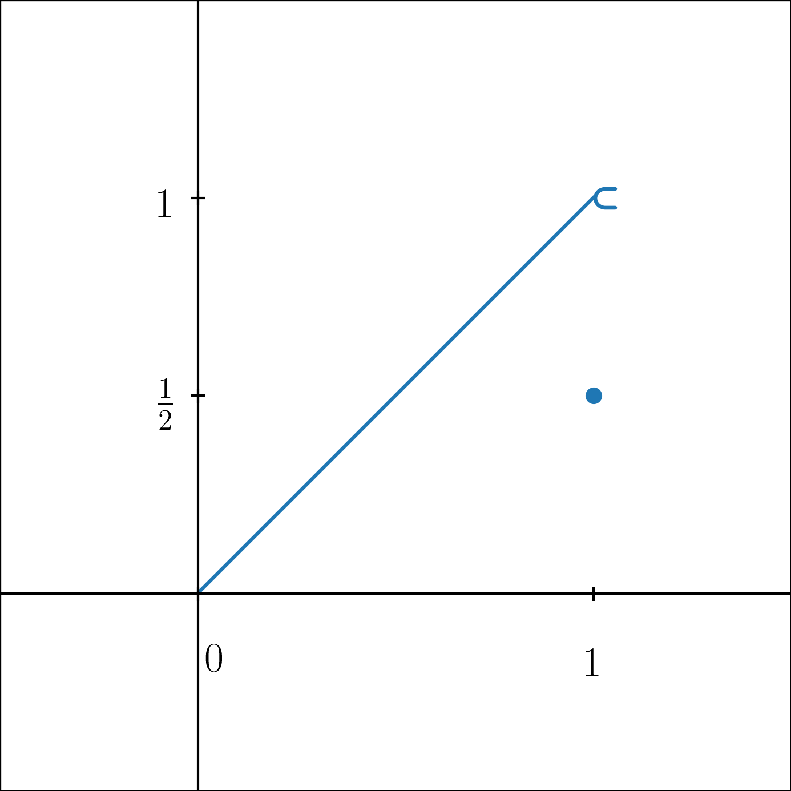
Ceci est faux pour \(f\) continue sur \([a,b[\) comme l’illustre par exemple \(f : x \in [0,1[ \mapsto x\).
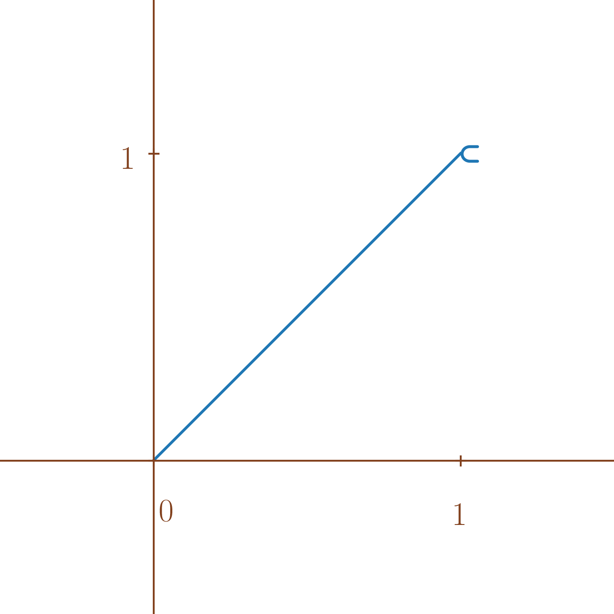
Soit \(f : [a,b] \to \mathbb{R}\) continue, alors \(f([a,b])\) est un segment. On a \(f([a,b]) = [m,M]\) avec \(M = \sup_{x \in [a,b]} f(x)\) et \(m = \inf_{x \in [a,b]} f(x)\).
(Exemple d’utilisation)
Exercice — Soient \(f : [a,b] \to \mathbb{R}\), \(g : [a,b] \to \mathbb{R}\) continues sur \([a,b]\) telles que \[\forall x \in [a,b], f(x) < g(x).\] Montrer qu’il existe \(\alpha > 0\) tel que \[\forall x \in [a,b], g(x)-f(x) > \alpha.\]
Corrigé — Soit \(h = g-f\), \(h\) est continue sur \([a,b]\) et atteint sa borne inférieure \(\alpha\) en un point \(x_1 \in [a,b]\).
De plus, \[\forall x \in [a,b], h(x) > 0.\]
Donc \(\alpha = h(x_1) > 0\).
D’où \[\forall x \in [a,b], h(x) = g(x)-f(x)\geq \alpha > 0.\]
Cela est faux pour \(f : [a,+\infty[\to \mathbb{R}\), \(g : [a,+\infty[\to \mathbb{R}\) continues sur \([a,+\infty[\) telles que \[\forall x \in [a,+\infty[, f(x) < g(x).\]
comme l’illustrent \(f : x\in[1,+\infty[\to 1\) et \(g : x\in[1,+\infty[\to 1+\frac{1}{x}\).
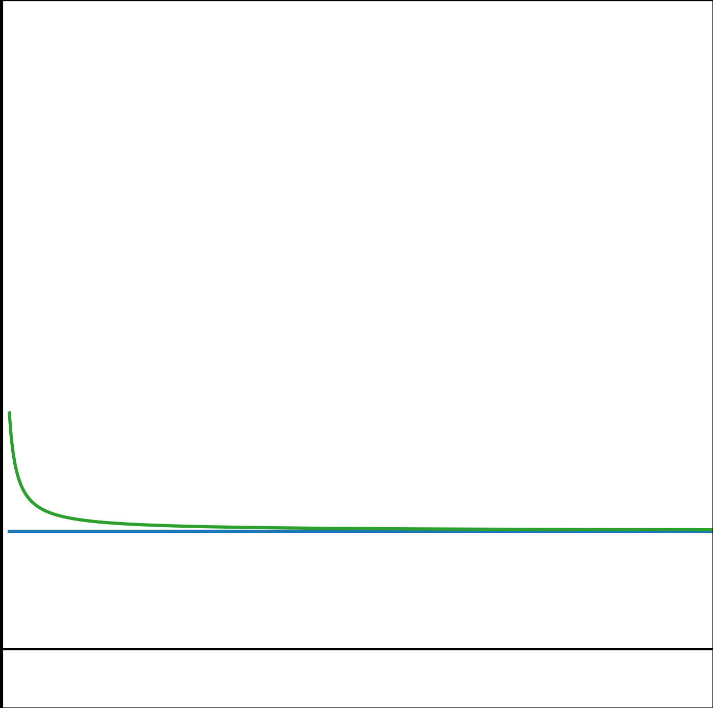
Soit \(f : I \to \mathbb{R}\) continue sur sur un intervalle \(I\) de \(\mathbb{R}\) et strictement monotone \(I\). Alors \(J = f(I)\) est un intervalle. De plus, pour rappel, \(f\) admet une fonction réciproque \(f^{-1} : J \to \mathbb{R}\).
Alors, \(f^{-1}\) est continue sur \(J\).
On prouve le résultat pour \(f\) strictement croissante et la preuve s’adapte pour \(f\) strictement décroissante. Soit \(y_0 \in J\), \(x_0 = f^{-1}(y_0) \in I\) et \(\varepsilon > 0\).
Si \(x_0\) n’est pas une borne de \(I\) alors \(y_0\) n’est pas une borne de \(J\) (par stricte croissance de \(f\)).
Le risque est que \(x_0-\varepsilon \notin I\) pi \(x_0+\varepsilon \notin I\).
Comme \(I\) est un intervalle, on peut considérer \(\varepsilon' < \varepsilon\) tel que \(x_- = x_0-\varepsilon' \in I\) et \(x_+ = x_0+\varepsilon' \in I\).
On note \(y_- = f(x_0-\varepsilon') \in J, y_+ = f(x_0+\varepsilon') \in J\) et \(\eta = \min(y_0-y_-,y_+-y_0)\). Par stricte croissance de \(f\), \(\eta > 0\).
On a alors \(y_- = y_0+(y_--y_0) \leq y_0-\eta\) et \(y_+ = y_0+(y_+-y_0) \geq y_0+\eta\).
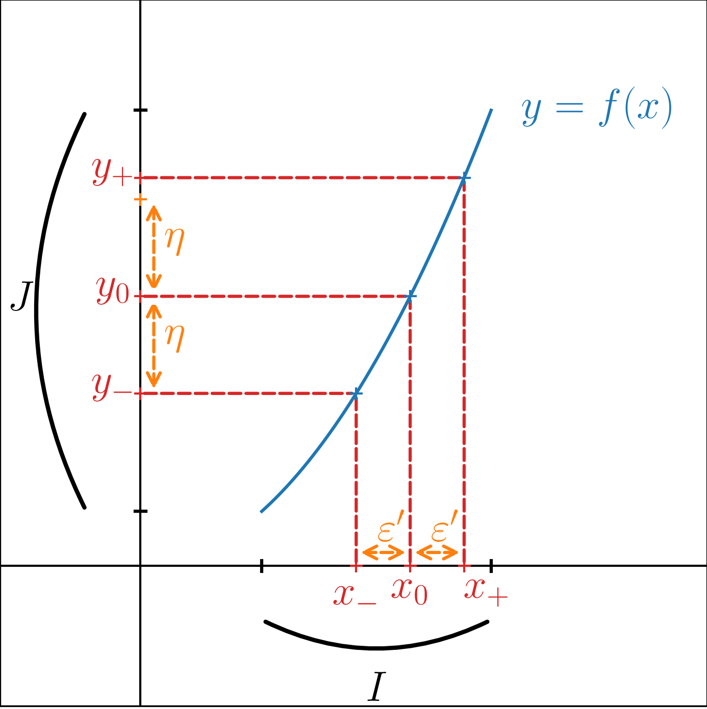
De plus, pour \(y \in J\), \[\begin{aligned} |y-y_0| \leq \eta & \iff -\eta \leq y-y_0 \leq \eta \\ & \iff y_0-\eta \leq y \leq y_0+\eta \\ & \Longrightarrow y_- \leq y_0-\eta \leq y \leq y_0+\eta \leq y_+ \\ & \Longrightarrow f^{-1}(y_-) \leq f^{-1}(y) \leq f^{-1}(y_+) \text{ par croissance de $f^{-1}$} \\ & \Longrightarrow x_0-\varepsilon' \leq f^{-1}(y) \leq x_0+\varepsilon' \text{ par définition de $y_-,y_+$,}\\ & \Longrightarrow f^{-1}(y_0)-\varepsilon' \leq f^{-1}(y) \leq f^{-1}(y_0)+\varepsilon' \text{ par définition de $x_0$.}\\ & \iff |f^{-1}(y)-f^{-1}(y_0)| \leq\varepsilon' \end{aligned}\]
En particulier, on a donc pour \(y \in J\), \[|y-y_0| \leq \eta \Longrightarrow |f^{-1}(y)-f^{-1}(y_0)| \leq\varepsilon' \leq \varepsilon\]
donc \(f^{-1}\) est continue en \(y_0\).
Si \(x_0\) est la borne gauche ie \(I=[x_0,?[\) ou \(I=[x_0,?]\). Alors, par stricte croissance de \(f^{-1}\), \(y_0\) est la borne gauche de \(J\) donc \(J=[y_0,?[\) ou \(J=[y_0,?]\) (par stricte croissance de \(f\)).
Le risque est alors que \(x_0+\varepsilon \notin I\) (on sait déjà que quoiqu’il arrive \(x_0-\varepsilon \notin I\)).
Comme \(I\) est un intervalle, on peut considérer \(\varepsilon' < \varepsilon\) tel que \(x_0+\varepsilon' \in I\).
On note \(y_+ = f(x_0+\varepsilon') \in J\) et \(\eta = y_+-y_0\). Par stricte croissance de \(f\), \(\eta > 0\).
On a alors \(y_+ = y_0+(y_+-y_0) \geq y_0+\eta\).
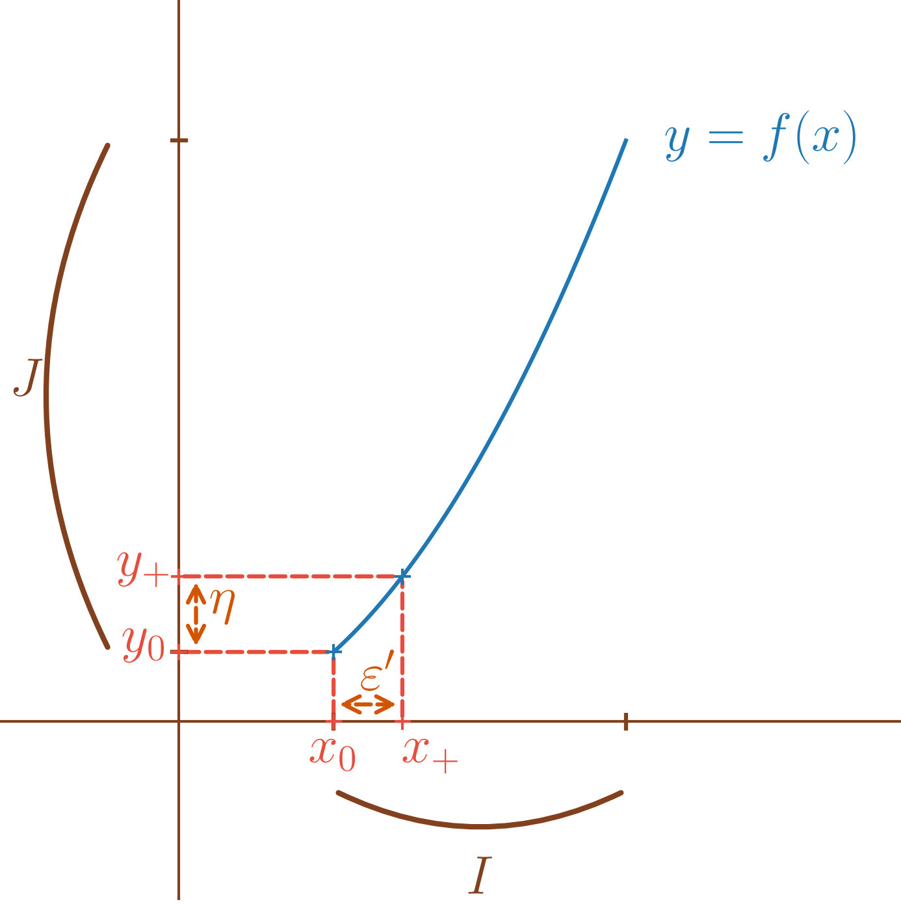
De plus, pour \(y \in J\), \[\begin{aligned} |y-y_0| \leq \eta & \iff 0 \leq y-y_0 \leq \eta \text{ car $J=[y_0,?[$ ou $J=[y_0,?]$}\\ & \iff y_0 \leq y \leq y_0+\eta \\ & \Longrightarrow y_0 \leq y \leq y_0+\eta \leq y_+ \\ &\Longrightarrow f^{-1}(y_0) \leq f^{-1}(y) \leq f^{-1}(y_+) \text{ par croissance de $f^{-1}$,} \\ & \Longrightarrow x_0 \leq f^{-1}(y) \leq x_0+\varepsilon' \text{ par définition de $y_+$,}\\ & \Longrightarrow f^{-1}(y_0) \leq f^{-1}(y) \leq f^{-1}(y_0)+\varepsilon' \text{ par définition de $x_0$.}\\ & \iff |f^{-1}(y)-f^{-1}(y_0)| \leq\varepsilon' \text{ car $f^{-1}(y) \in I$ et $I=[f^{-1}(y_0),?[$ ou $I=[f^{-1}(y_0),?]$}\\ \end{aligned}\]
En particulier, on a donc pour \(y \in J\), \[|y-y_0| \leq \eta \Longrightarrow |f^{-1}(y)-f^{-1}(y_0)| \leq\varepsilon' \leq \varepsilon\]
donc \(f^{-1}\) est continue en \(y_0\).
Si \(x_0\) est la borne droite de \(I\), la preuve est similaire à ce qui précède.
Dans la preuve précédente, où a servi l’hypothèse "\(f\) continue" ? En fait, cette hypothèse sert juste pour dire que \(J = f(I)\) est un intervalle. Elle n’est pas nécessaire pour la continuité de \(f^{-1}\). En revanche, \(I\) un intervalle est indispensable comme l’illustre l’exemple ci-dessous.
En considérant \(f : x \in ]-\infty,0[ \cup [1,+\infty[ \mapsto \begin{cases} x \mbox{ si $x < 0$} x-1 \mbox{ si $x \geq 1$} \end{cases}\) strictement monotone et continue sur \(]-\infty,0[ \cup [1,+\infty[\), possède la réciproque \(f : x \in \mathbb{R}\mapsto \begin{cases} y \mbox{ si $y \leq 0$} y+1 \mbox{ si $y > 0$} \end{cases}\) non continue sur \(\mathbb{R}\).
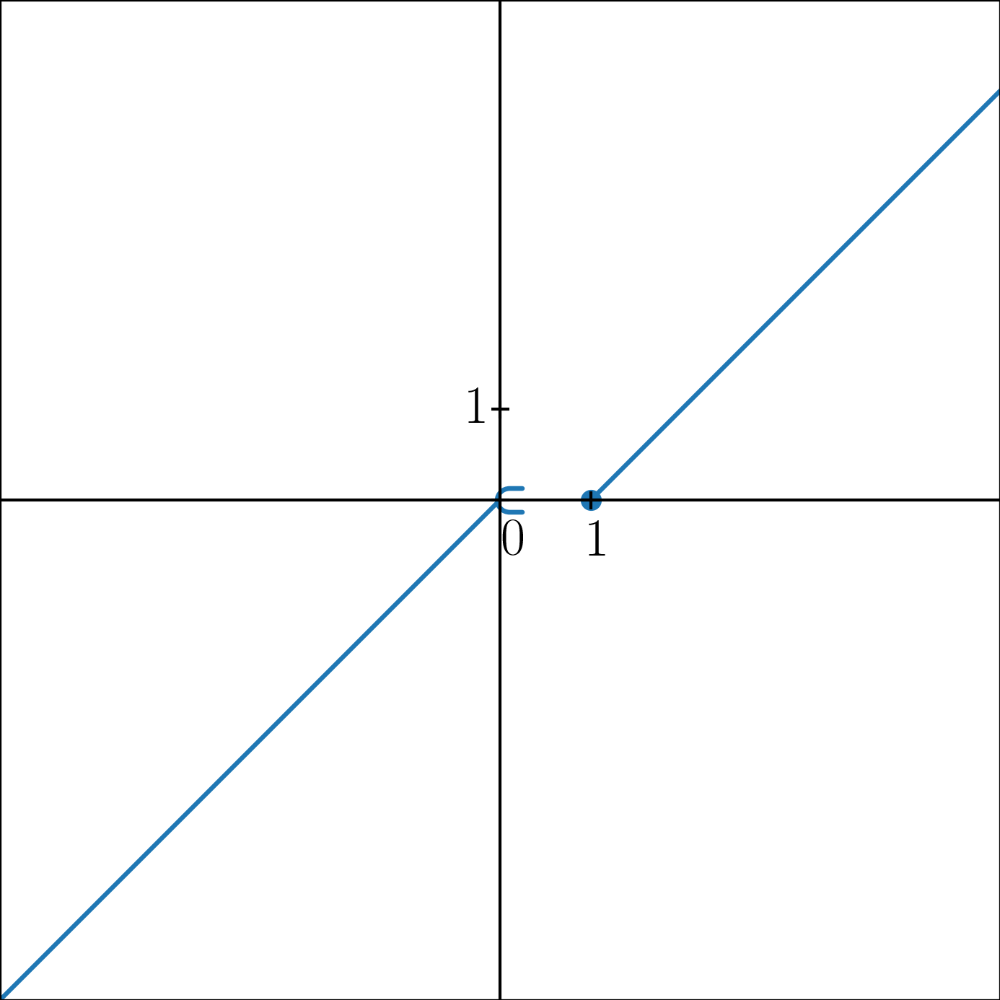 |
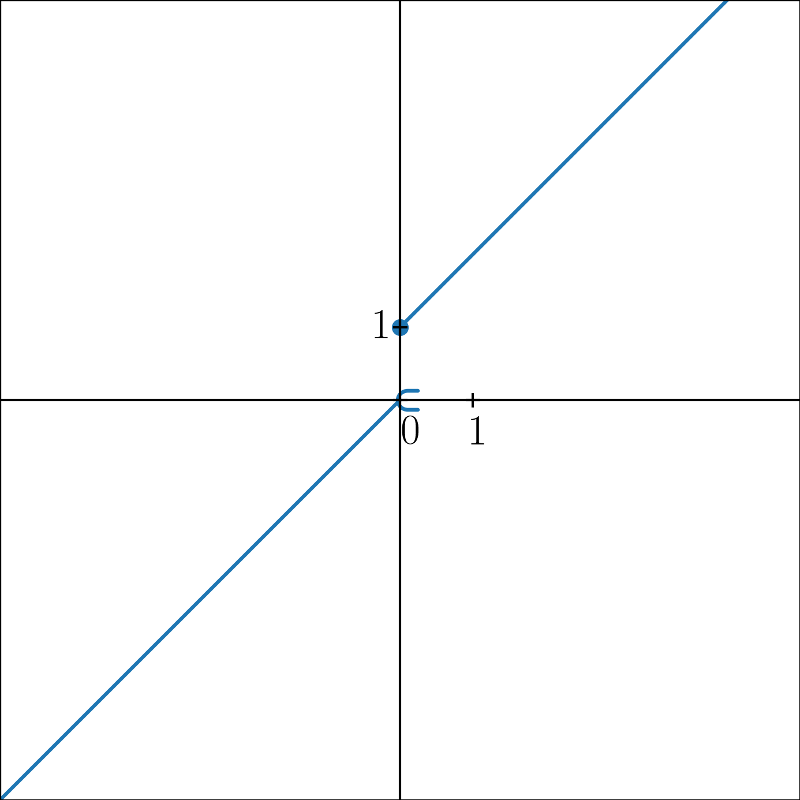 |
Soit \(f : I \to \mathbb{R}\) continue sur sur un intervalle \(I\) de \(\mathbb{R}\) et strictement croissante \(I\). \(J\) est un intervalle et
soit \(I = [a,b], [a,b[, ]a,b] \text{ ou }]a,b[\) avec \(a < b \in \mathbb{R}\)
et \(J = [f(a),f(b)], [f(a),f(b)[, ]f(a),f(b)] \text{ ou }]f(a),f(b)[\),
soit \(I = [a,+\infty[,]a,+\infty[, ]-\infty,b] \text{ ou }]-\infty,b[\) avec \(a, b \in \mathbb{R}\)
et \(J = [f(a),+\infty[,]f(a),+\infty[, ]-\infty,f(b)] \text{ ou }]-\infty,f(b)[\).
Soit \(n \in \mathbb{N}^{\star}\) et \(f_n : x \in \mathbb{R}^{+}\mapsto x^n \in \mathbb{R}\).
\(f_n\) est strictement croissante sur \(\mathbb{R}^{+}\) avec \(f_n(0) =0\). De plus, \(f_n\) est continue sur \(\mathbb{R}^p\) et non majorée donc \(f(\mathbb{R}^p) = \mathbb{R}^p\).
\(f_n\) est donc continue sur \(\mathbb{R}^{+}\) et pour \(y\in \mathbb{R}^{+}, f_n^{-1}(y)\) est l’unique réel \(x\) positif tel que \(x^n = y\), noté \(\sqrt[n]{y}\).
Soit \(x_0 \in \mathbb{R}\) et \(I\) intervalle de \(\mathbb{R}\) tel que \(x_0 \in I\) et \(I \neq \{x_0\}\), \(D\) désigne \(I\) ou \(I \setminus \{x_0\}\).
Soit \(f: D \to \mathbb{R}\) et \(\ell \in \mathbb{R}\), \(f\) admet \(\ell\) pour limite en \(x_0\) ou tend vers \(\ell\) en \(x_0\) si \[\forall \varepsilon > 0, \exists \eta_\varepsilon / x\in D, |x-x_0| \leq \eta_\varepsilon \Longrightarrow |f(x)-\ell| \leq \varepsilon.\]
Dans ce cas, on écrit \(f(x) \xrightarrow[x \to x_0]{} \ell\).
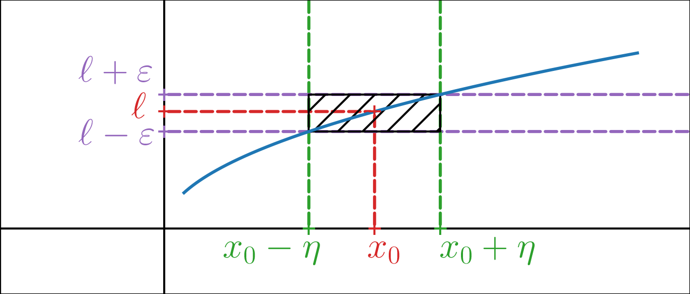
Comme précédemment, pour \(C > 0\), la définition équivaut à \[\forall \varepsilon > 0, \exists \eta_\varepsilon / x\in D, |x-x_0| \leq \eta_\varepsilon \Longrightarrow |f(x)-\ell| \leq C\varepsilon.\]
Si \(f(x) \xrightarrow[x \to x_0]{} \ell \in \mathbb{R}\), \(\ell\) est unique et est appelé la limite de \(f\) en \(x_0\).
Par l’absurde, supposons \(f(x) \xrightarrow[x \to x_0]{} \ell \in \mathbb{R}\) et \(f(x) \xrightarrow[x \to x_0]{} \ell' \in \mathbb{R}\) avec \(\ell < \ell'\).
Soit \(\varepsilon = \frac{\ell'-\ell}{4} > 0\), il existe \(\eta > 0\) tel que pour tout \(x\in D\), \[|x-x_0| \leq \eta \Longrightarrow |f(x)-\ell| \leq \varepsilon \Longrightarrow f(x)-\ell \leq \varepsilon \Longrightarrow f(x) \leq \ell+\varepsilon = \frac{3\ell+\ell'}{4},\] il existe aussi \(\eta' > 0\) tel que pour tout \(x\in D\), \[|x-x_0| \leq \eta' \Longrightarrow |f(x)-\ell'| \leq \varepsilon \Longrightarrow f(x)-\ell' \geq -\varepsilon \Longrightarrow f(x) \geq \ell'-\varepsilon = \frac{\ell+3\ell'}{4}.\] On a donc, pour \(x \in D\), \[|x-x_0| \leq \min(\eta,\eta') \Longrightarrow \frac{\ell+3\ell'}{4}\leq f(x) \leq \frac{3\ell+\ell'}{4},\] ce qui est absurde car \(\frac{\ell+3\ell'}{4} = \frac{\ell+2\ell'+\ell'}{4} > \frac{\ell+2\ell+\ell'}{4} = \frac{3\ell+\ell'}{4}\). Donc \(\ell = \ell'\).
Soit \(f \in \mathscr{F}(D,\mathbb{R})\), si \(D = I\), ie \(x_0 \in D\), alors
\[\text{$f$ continue en $x_0$} \iff \text{$f(x) \xrightarrow[x \to x_0]{} f(x_0)$.}\]
Le côté droit et le côté gauche s’écrivent : il existe \(\eta_\varepsilon > 0\) tel que pour \(x \in I\), \[|x-x_0| \leq \eta_\varepsilon \Longrightarrow |f(x)-f(x_0)| \leq \varepsilon.\]
Soit \(f \in \mathscr{F}(D,\mathbb{R})\), si \(D = I\), ie \(x_0 \in D\), alors s’il existe \(\ell \in \mathbb{R}\) tel que \(f(x) \xrightarrow[x \to x_0]{} \ell\), \(\ell = f(x_0)\) et \(f\) est continue en \(x_0\).
Par l’absurde, supposons \(\ell \neq f(x_0)\).
On a alors \(\varepsilon = \frac{|f(x_0)-\ell|}{2} > 0\).
De plus, il existe \(\eta> 0\) tel que pour \(x \in I\), \[|x-x_0| \leq \eta \Longrightarrow |f(x)-f(x_0)| \leq \varepsilon.\] En prenant \(x = x_0\), on a donc \[|f(x)-f(x_0)| \leq \varepsilon = \frac{|f(x_0)-\ell|}{2} \Longrightarrow \frac{|f(x_0)-\ell|}{2} \leq 0 \Longrightarrow |f(x)-f(x_0)| =0,\] ce qui est absurde.
Si \(D = I \setminus \{x_0\}\), ie \(x_0 \notin D\), et il existe \(\ell \in \mathbb{R}\) tel que \(f(x) \xrightarrow[x \to x_0]{} \ell\) alors on peut poser \(\overline{f} : x \in D \mapsto \begin{cases} f(x) & \mbox{ si $x \in D$} \\ \ell & \mbox{ si $x = x_0$} \end{cases}\) et \(\overline{f}\) est continue en \(x_0\).
Soit \(f: D \to \mathbb{R}\) avec \(I\) intervalle ouvert de \(\mathbb{R}\).
\(f\) admet \(\ell_g \in \mathbb{R}\) pour limite à gauche en \(x_0\) si \[\forall \varepsilon > 0, \exists \eta_\varepsilon / x\in D, x \leq x_0 |x-x_0| \leq \eta_\varepsilon \Longrightarrow |f(x)-\ell_g| \leq \varepsilon.\]
Dans ce cas, on écrit \(f(x) \xrightarrow[x \to x_0^-]{} \ell\).
\(f\) admet \(\ell_d \in \mathbb{R}\) pour limite à droite en \(x_0\) si \[\forall \varepsilon > 0, \exists \eta_\varepsilon / x\in D, x \geq x_0 |x-x_0| \leq \eta_\varepsilon \Longrightarrow |f(x)-\ell_d| \leq \varepsilon.\]
Dans ce cas, on écrit \(f(x) \xrightarrow[x \to x_0^+]{} \ell\).
Soit \(f \in \mathscr{F}(D,\mathbb{R})\), si \(D = I\), ie \(x_0 \in D\), alors
\[\text{$f$ continue en $x_0$} \iff \text{Il existe $\ell_g,\ell_d \in \mathbb{R}$ tels que $\begin{cases} f(x) & \xrightarrow[x \to x_0^-]{} \ell_g \\ f(x) & \xrightarrow[x \to x_0^+]{} \ell_d \end{cases}$ et $\ell_d=\ell_g$.}\]
(\(\Longrightarrow\)) Soit \(\varepsilon > 0\), il existe \(\eta> 0\) tel que pour tout \(x \in I\), \[|x-x_0| \leq \eta \Longrightarrow |f(x)-f(x_0)| \leq \varepsilon.\] Donc en particulier, pour tout \(x \in I\), \[x\leq x_0,|x-x_0| \leq \eta \Longrightarrow |f(x)-f(x_0)| \leq \varepsilon.\] donc \(f(x) \xrightarrow[x \to x_0^-]{} f(x_0)\) et \[x\geq x_0,|x-x_0| \leq \eta \Longrightarrow |f(x)-f(x_0)| \leq \varepsilon.\] donc \(f(x) \xrightarrow[x \to x_0^+]{} f(x_0)\).
(\(\Longleftarrow\)) Notons \(\ell = \ell_g = \ell_d\). Soit \(\varepsilon > 0\), il existe \(\eta^-> 0\) tel que pour tout \(x \in I\),
\[x \leq x_0, |x-x_0| \leq \eta^-\Longrightarrow |f(x)-\ell| \leq \varepsilon\]
et il existe \(\eta^+> 0\) tel que pour tout \(x \in I\),
\[x \geq x_0,|x-x_0| \leq \eta^+\Longrightarrow |f(x)-\ell| \leq \varepsilon\]
On a donc pour tout \(x \in I\),
\[|x-x_0| \leq \min(\eta^-,\eta^+)\Longrightarrow |f(x)-\ell| \leq \varepsilon\]
Donc \(f(x) \xrightarrow[x \to x_0]{} \ell\) et d’après la proposition [prop:continuite_lim], \(f\) est continue en \(x_0\) avec \(\ell = f(x_0)\).
Exercice — Soit \(f : x \in \mathbb{R}^{+\star}\mapsto \sqrt{x}\sin \left(\frac{1}{x}\right)\). Existence d’une limite de \(f\) en \(0\) ?
Corrigé — Montrons que cette limite est \(0\). Soit \(\varepsilon > 0\), on cherche \(\eta > 0\) tel que pour \(x\in \mathbb{R}^{+\star}\), \[|x| \leq \eta \Longrightarrow |f(x)| \leq \varepsilon.\] Or, pour \(x \in \mathbb{R}^{+\star}\), \[\left|f(x)\right| = \left|\sqrt{x}\sin \left(\frac{1}{x}\right)\right| \leq \sqrt{x}\] Donc \(\eta = \varepsilon^2\) convient (car \(\sqrt{\varepsilon^2} = \varepsilon >0)\).
Exercice — Soit \(f : x \in [0,1] \mapsto \begin{cases} 2-x & \mbox{ si $x\in ]0,1]$} \\ 0 & \mbox{ si $x = 0$.} \end{cases}\). Existence d’une limite de \(f\) en \(0\) ?
Corrigé —
Soit \(f \in \mathscr{F}(D,\mathbb{R})\) tel que \(f(x) \xrightarrow[x \to x_0]{} \ell \in \mathbb{R}\) alors \(f\) est bornée au voisinage de \(x_0\) ie, pour rappel, il existe \(r > 0, M \in \mathbb{R}^+\) tel que \[x \in D, |x-x_0| \leq r \Longrightarrow |f(x)| \leq M\]
Soit \(\varepsilon = 1 > 0\), il existe \(\eta > 0\) tel que \[x\in D, |x-x_0| \leq \eta \Longrightarrow |f(x)-\ell| \leq 1 \Longrightarrow |f(x)| = |f(x)-\ell+\ell| \leq 1+|\ell|.\]
Donc avec \(M = 1+|\ell| \in \mathbb{R}^+, r = \eta\), \[x \in D, |x-x_0| \leq r \Longrightarrow |f(x)| \leq M\]
La réciproque est fausse. Si on considère \(f : x \in \mathbb{R}^{+\star}\mapsto \frac{x}{|x|}\) alors \(f\) est bornée sur \(\mathbb{R}\) mais n’admet pas de limite en \(1\).
Soit \(f \in \mathscr{F}(D,\mathbb{R})\) tel que \(f(x) \xrightarrow[x \to x_0]{} \ell > 0\) alors il existe \(\alpha > 0 \text{ et }r> 0\) tels que \[x \in D, |x-x_0| \leq r \Longrightarrow f(x) \geq \alpha > 0.\]
Soit \(\varepsilon = \frac{\ell}{2} > 0\), il existe \(\eta > 0\) tel que \[x\in D, |x-x_0| \leq \eta \Longrightarrow |f(x)-\ell| \leq \varepsilon \Longrightarrow f(x)-\ell \geq -\varepsilon \Longrightarrow f(x) \geq \ell-\varepsilon=\frac{\ell}{2} > 0.\]
Donc avec \(\alpha = \frac{\ell}{2} \in \mathbb{R}^+, r = \eta\), \[x \in D, |x-x_0| \leq r \Longrightarrow f(x) \geq \alpha > 0.\]
Soit \(f \in \mathscr{F}(D,\mathbb{R})\). Soit \(\ell \in \mathbb{R}\), \(f(x) \xrightarrow[x \to x_0]{} \ell \iff\) Pour tout suite \((u_n)\) d’éléments de \(D\) telle que \(u_n \xrightarrow[n \to +\infty]{} \ell\), \(f(u_n) \xrightarrow[n \to +\infty]{} \ell\).
(\(\Longrightarrow\)) Soit \((u_n)\) d’éléments de \(D\) telle que \(u_n \xrightarrow[n \to +\infty]{} \ell\).
Soit \(\varepsilon > 0\), il existe \(\eta > 0\) tel que pour \(x \in D\), \[|x-x_0| \leq \eta \Longrightarrow |f(x)-\ell| \leq \varepsilon.\]
Or, soit \((u_n)\) d’éléments de \(D\) telle que \(u_n \xrightarrow[n \to +\infty]{} \ell\), il existe \(N \in \mathbb{N}\) tel que pour tout \(n \in \mathbb{N}\), \[n\geq N \Longrightarrow |u_n-x_0| \leq \eta.\]
Donc, \[n\geq N \Longrightarrow |u_n-x_0| \leq \eta \Longrightarrow |f(u_n)-\ell| \leq \varepsilon.\]
Donc \(f(u_n) \xrightarrow[n \to +\infty]{} \ell\).
(\(\Longleftarrow\)) Par contraposée, on veut montrer \(f(x)\) ne tend pas vers \(\ell\) quand \(x \longrightarrow x_0\) \(\Longrightarrow\) Il existe une suite \((u_n)\) d’éléments de \(D\) telle que \(u_n \xrightarrow[n \to +\infty]{} \ell\), \(f(u_n)\) ne tend pas vers \(\ell\) quand \(n\longrightarrow+\infty\).
Or, si \(f(x)\) ne tend pas vers \(\ell\) quand \(x \longrightarrow x_0\), il existe \(\varepsilon_0\) tel que pour tout \(\eta > 0\), il existe \(x_\eta \in D\) tel que \[|x_\eta-x_0| \leq \eta \text{ et }|f(x_\eta)-\ell| > \varepsilon_0\] En prenant \(\eta = \frac{1}{n}\) et \(u_n \in D\) tel que \[|u_n-x_0| \leq \frac{1}{n} \text{ et }|f(u_n)-\ell| > \varepsilon_0.\]
On a \((u_n)\) suite de \(D\) tel que \(u_n \xrightarrow[n \to +\infty]{} x_0\) mais \(f(u_n)\) ne tend pas vers \(\ell\) quand \(n\longrightarrow+\infty\).
Exercice — Soit \(f : x \in \left]0,\frac{2}{\pi}\right[ \mapsto \sin \left(\frac{1}{x}\right)\). \(f\) admet-elle une limite en \(0\) ?
Corrigé — Soit \(x \in \left]0,\frac{2}{\pi}\right[\),
\[\begin{aligned} f(x) = 1 & \iff \sin \left(\frac{1}{x}\right) = 1 \\ & \iff \frac{1}{x} = \frac{\pi}{2} +2k\pi, k \in \mathbb{N}\\ & \iff x = \frac{1}{\frac{\pi}{2} +2k\pi}, k \in \mathbb{N}\\ & \iff x = \frac{2}{(4k+1)\pi}, k \in \mathbb{N}. \end{aligned}\]
Donc avec \(u_n = \frac{2}{(4n+1)\pi} \xrightarrow[n \to +\infty]{} 0\), \(f(u_n) = 1 \xrightarrow[n \to +\infty]{} 1\).
\[\begin{aligned} f(x) = -1 & \iff \sin \left(\frac{1}{x}\right) = -1 \\ & \iff \frac{1}{x} = \frac{3\pi}{2} +2k\pi, k \in \mathbb{N}\\ & \iff x = \frac{1}{\frac{3\pi}{2} +2k\pi}, k \in \mathbb{N}\\ & \iff x = \frac{2}{(4k+3)\pi}, k \in \mathbb{N}. \end{aligned}\]
Donc avec \(v_n = \frac{2}{(4n+3)\pi} \xrightarrow[n \to +\infty]{} 0\), \(f(u_n) = -1 \xrightarrow[n \to +\infty]{} -1\).
On en déduit que \(f\) n’admet pas de limite en \(0\).
Allure de la courbe de \(f\) :
\[\begin{aligned} f(x) = 0 & \iff \sin \left(\frac{1}{x}\right) = 0 \\ & \iff \frac{1}{x} = k\pi, k \in \mathbb{N}\\ & \iff x = \frac{1}{k\pi}, k \in \mathbb{N}^{\star}\\ & \iff x = \frac{2}{k\pi}, k \in \mathbb{N}^{\star}. \end{aligned}\]
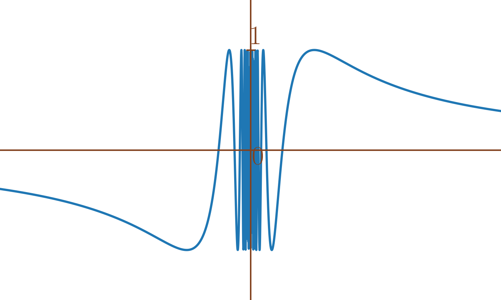
(Application) Soit \(f : x \in \mathbb{R}^{\star}\mapsto \frac{\sin x}{x}\).
\(\sin\) est dérivable en \(0\) donc \(\frac{\sin x}{x} = \frac{\sin x - \sin 0}{x}\xrightarrow[x \to 0]{} \sin' 0 = \cos 0 = 1\).
Donc \(f(x) \xrightarrow[x \to 0]{} 1\).
On en déduit qu’avec \((u_n)_{n\geq 1}\) définie par \(u_n = \frac{1}{n}\) pour \(n \geq 1\), \(f(u_n) \xrightarrow[n \to +\infty]{} 1\) ou encore \(\frac{\sin\left(\frac{1}{n}\right)}{\frac{1}{n}} \underset{n\to +\infty}{\sim} 1 \iff \sin\left(\frac{1}{n}\right) \underset{n\to +\infty}{\sim} \frac{1}{n}\).
Soit \(f \in \mathscr{F}(D,\mathbb{R})\) tel que \(f(x) \xrightarrow[x \to x_0]{} \ell \in \mathbb{R}\) alors \[|f(x)| \xrightarrow[x \to x_0]{} |\ell|\]
Soit \((u_n)\) suite de \(D\) telle que \(u_n \xrightarrow[n \to +\infty]{} x_0\) alors \(f(u_n) \xrightarrow[x \to x_0]{} \ell\) donc \(|f(u_n)| \xrightarrow[n \to +\infty]{} |\ell|\) donc \(|f(x)| \xrightarrow[x \to x_0]{} |\ell|\).
La réciproque est fausse. Si on considère \(f : x \in \mathbb{R}^{+\star}\mapsto \frac{x}{|x|}\) alors \(f\) n’a pas de limite en \(1\) mais \(|f|\), oui.
Soit \(f \in \mathscr{F}(D,\mathbb{R})\) tel que \(|f(x)| \xrightarrow[x \to x_0]{} 0\) alors \[f(x) \xrightarrow[x \to x_0]{} 0\]
Soit \((u_n)\) suite de \(D\) telle que \(u_n \xrightarrow[n \to +\infty]{} x_0\) alors \(|f(u_n)| \xrightarrow[x \to x_0]{} 0\) donc \(f(u_n) \xrightarrow[n \to +\infty]{} 0\) donc \(f(x) \xrightarrow[x \to x_0]{} 0\).
Soit \(g \in \mathscr{F}(D,\mathbb{R})\) bornée au voisinage de \(x_0\) et \(f \in \mathscr{F}(D,\mathbb{R})\) telle que \(f(x) \xrightarrow[x \to x_0]{} 0\) alors \[f(x)g(x) \xrightarrow[x \to x_0]{} 0.\]
Soit \((u_n)\) suite de \(D\) telle que \(u_n \xrightarrow[n \to +\infty]{} x_0\).
Alors, \(f(u_n) \xrightarrow[n \to +\infty]{} 0\). De plus, \(g\) est bornée au voisinage de \(x_0\) donc il existe \(r > 0, M \in \mathbb{R}^{+}\) tels que \[x \in D, |x-x_0| \leq r \Longrightarrow |g(x)| \leq M.\]
Or, comme \(u_n \xrightarrow[n \to +\infty]{} x_0\), il existe \(N \in \mathbb{N}\) tel que \[n \geq N \Longrightarrow |u_n-x_0| \leq r.\]
Donc
\[n \geq N \Longrightarrow |u_n-x_0| \leq r \Longrightarrow |g(u_n)| \leq M.\]
Donc, \((g(u_n))\) est bornée et \(f(u_n) \xrightarrow[n \to +\infty]{} 0\) donc \(f(u_n)g(u_n) \xrightarrow[n \to +\infty]{} 0\) donc \(f(x)g(x) \xrightarrow[x \to x_0]{} 0\).
Soient \(\alpha \in \mathbb{R}\) et \(f,g \in \mathscr{F}(D,\mathbb{R})\) telles que \(f(x) \xrightarrow[x \to x_0]{} \ell \in \mathbb{R}\) et \(g(x) \xrightarrow[x \to x_0]{} \ell' \in \mathbb{R}\),
\(\alpha f(x) \xrightarrow[x \to x_0]{} \alpha \ell\),
\(f(x)+g(x) \xrightarrow[x \to x_0]{} \ell+\ell'\),
\(f(x)g(x) \xrightarrow[x \to x_0]{} \ell\ell'\).
Soit \((u_n)\) suite de \(D\) telle que \(u_n \xrightarrow[n \to +\infty]{} x_0\) alors \(f(u_n) \xrightarrow[x \to x_0]{} \ell\) et \(g(u_n) \xrightarrow[x \to x_0]{} \ell'\). Donc
\(\alpha f(u_n) \xrightarrow[n \to +\infty]{} \alpha \ell\) donc \(\alpha f \xrightarrow[x \to x_0]{} \alpha \ell\),
\(f(u_n)+g(u_n) \xrightarrow[n \to +\infty]{} \ell+\ell'\) donc \(f(x)+g(x) \xrightarrow[x \to x_0]{} \ell+\ell'\),
\(f(u_n)g(u_n) \xrightarrow[n \to +\infty]{} \ell\ell'\) donc \(f(x)g(x) \xrightarrow[x \to x_0]{} \ell\ell'\).
Soit \(f \in \mathscr{F}(D,\mathbb{R})\) tel que \(f(x) \xrightarrow[x \to x_0]{} \ell > 0\), pour rappel, il existe \(\alpha > 0 \text{ et }r> 0\) tels que \[x \in D, |x-x_0| \leq r \Longrightarrow f(x) \geq \alpha > 0.\]
Donc \(\frac{1}{f}\) est définie sur \(D \cap [x_0-r,x_0+r]\) et \[\frac{1}{f(x)} \xrightarrow[x \to x_0]{} \frac{1}{\ell}.\]
Soit \((u_n)\) suite de \(D \cap [x_0-r,x_0+r]\) telle que \(u_n \xrightarrow[n \to +\infty]{} x_0\) alors \(f(u_n) \xrightarrow[x \to x_0]{} \ell\) donc \(\frac{1}{f(u_n)} \xrightarrow[n \to +\infty]{} \frac{1}{\ell}\) donc \(\frac{1}{f(x)} \xrightarrow[x \to x_0]{} \frac{1}{\ell}.\)
Soit \(f \in \mathscr{F}(D,\mathbb{R})\) tel que \(f(x) \xrightarrow[x \to x_0]{} y_0\) et \(g \in \mathscr{F}(J,\mathbb{R})\), avec \(J\) intervalle de \(\mathbb{R}\) et tel que \(f(D) \subset J\). Alors \(y_0 \in J\) ou est une extrémité de \(J\). De plus, si \(g(y) \xrightarrow[y \to y_0]{} \ell\), \[(g\circ f)(x) \xrightarrow[x \to x_0]{} \ell.\]
Si on n’a ni \(y_0 \in J\) ni \(y_0\) est une extrémité de \(J\),
il existe \(\alpha > 0\) tel que \([y_0-\alpha,y_0+\alpha] \cap J = \emptyset\).
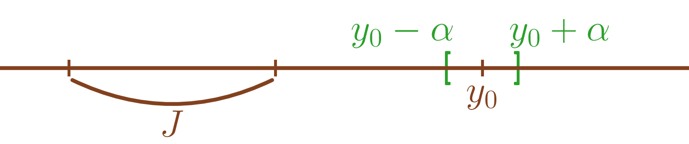
Or, \(f(x) \xrightarrow[x \to x_0]{} y_0\) donc avec \(\varepsilon = \alpha > 0\), il existe \(\eta > 0\) tel que \[x \in D, |x-x_0| \leq \eta \Longrightarrow |f(x)-y_0| \leq \alpha \Longrightarrow f(x) \in [y_0-\alpha, y_0+\alpha] \cap J,\] ce qui est absurde.
De plus, soit \((u_n)\) suite de \(D\) telle que \(u_n \xrightarrow[n \to +\infty]{} x_0\) alors \((f(u_n))\) est une suite de \(J\) et \(f(u_n) \xrightarrow[n \to +\infty]{} y_0\) donc \((g\circ f)(u_n) \xrightarrow[n \to +\infty]{} \ell\) et \((g\circ f)(x) \xrightarrow[x \to x_0]{} \ell\).
Soient \(f,g \in \mathscr{F}(D,\mathbb{R})\) telles que \(f(x) \xrightarrow[x \to x_0]{} \ell \in \mathbb{R}\) et \(g(x) \xrightarrow[x \to x_0]{} \ell' \in \mathbb{R}\). On suppose qu’il existe \(r > 0\) tel que \[x \in D, |x-x_0| \leq r \Longrightarrow f(x) \leq g(x).\] Alors \(\ell \leq \ell'\).
Soit \((u_n)\) suite de \(D\) telle que \(u_n \xrightarrow[n \to +\infty]{} x_0\).
On a alors \(f(u_n) \xrightarrow[x \to x_0]{} \ell\) et \(g(u_n) \xrightarrow[x \to x_0]{} \ell'\).
De plus, comme \(u_n \xrightarrow[n \to +\infty]{} x_0\), il existe \(N \in \mathbb{N}\) tel que \[n \geq N \Longrightarrow |u_n-x_0| \leq r.\]
Donc
\[n \geq N \Longrightarrow |u_n-x_0| \leq r \Longrightarrow f(u_n) \leq g(u_n).\]
et par passage à la limite, \(\ell \leq \ell'\).
Soient \(f,g,h \in \mathscr{F}(D,\mathbb{R})\) telles que \(f(x) \xrightarrow[x \to x_0]{} \ell \in \mathbb{R}\) et \(h(x) \xrightarrow[x \to x_0]{} \ell\). On suppose qu’il existe \(r > 0\) tel que \[x \in D, |x-x_0| \leq r \Longrightarrow f(x) \leq g(x) \leq h(x).\] Alors \(g(x) \xrightarrow[x \to x_0]{} \ell \in \mathbb{R}\).
Soit \((u_n)\) suite de \(D\) telle que \(u_n \xrightarrow[n \to +\infty]{} x_0\).
On a alors \(f(u_n) \xrightarrow[x \to x_0]{} \ell\) et \(h(u_n) \xrightarrow[x \to x_0]{} \ell\).
De plus, comme \(u_n \xrightarrow[n \to +\infty]{} x_0\), il existe \(N \in \mathbb{N}\) tel que \[n \geq N \Longrightarrow |u_n-x_0| \leq r.\]
Donc
\[n \geq N \Longrightarrow |u_n-x_0| \leq r \Longrightarrow f(u_n) \leq g(u_n) \leq h(u_n).\]
et par limite par théorème de limite par encadrement, \(g(u_n) \xrightarrow[n \to +\infty]{} \ell\) donc \(g(x) \xrightarrow[x \to x_0]{} \ell\).
Exercice — Soit \(f : x \in \mathbb{R}^{+\star}\mapsto \begin{cases} 1+x\sin\left(\frac{1}{x}\right) & \mbox{ si $\sin\left(\frac{1}{x}\right) \geq 0$} \\ 1-2x & \mbox{ si $\sin\left(\frac{1}{x}\right) < 0$} \\ \end{cases}\). \(f\) admet-elle une limite en \(0\) ?
Corrigé — Pour \(x \in \mathbb{R}^{+\star}\),
Si \(\sin\left(\frac{1}{x}\right) \geq 0\), \[0 \leq \sin\left(\frac{1}{x}\right) \leq 1 \Longrightarrow 1 \leq 1+x\sin\left(\frac{1}{x}\right) \leq 1+x \Longrightarrow 1-2x \leq 1+x\sin\left(\frac{1}{x}\right) \leq 1+x.\]
On en déduit que pour \(x \in \mathbb{R}^{+\star}\), \(1-2x \leq f(x) \leq 1+x\) et donc par encadrement, \(f \xrightarrow[x \to 0]{} 1\).
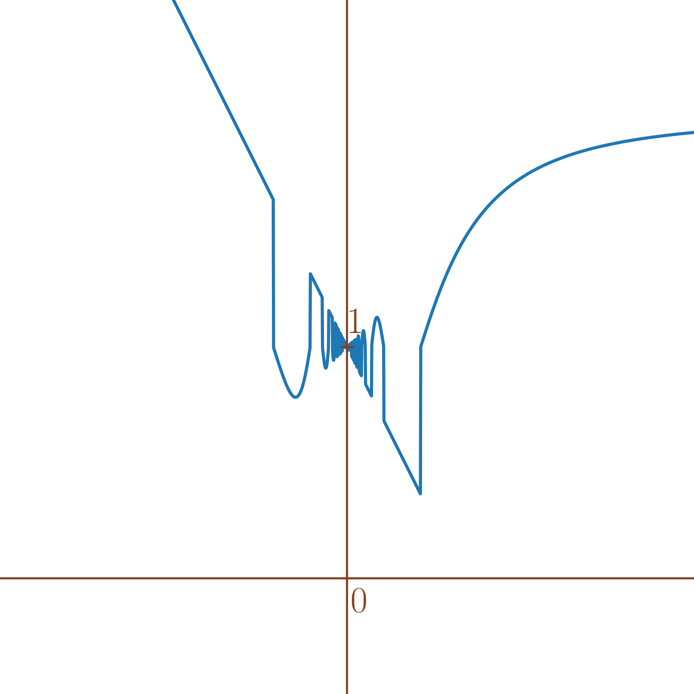
Soit \(f : [a,b[ \to \mathbb{R}\) croissante sur \([a,b[\) et majorée sur \([a,b[\).
Alors \(f(x) \xrightarrow[x \to b]{} \ell\) avec \(\ell = \sup_{x\in [a,b[} f(x)\).
\(f\) est majorée donc \(\ell\) existe bien.
De plus, soit \(\varepsilon > 0\), par caractérisation de la borne supérieure, il existe \(x_\varepsilon \in [a,b[\) tel que \[f(x_\varepsilon) > \ell-\varepsilon.\]
De plus, \(f\) est croissante donc pour \(x \in [x_\varepsilon,b[\), \[f(x) \geq f(x_\varepsilon) > \ell-\varepsilon.\]
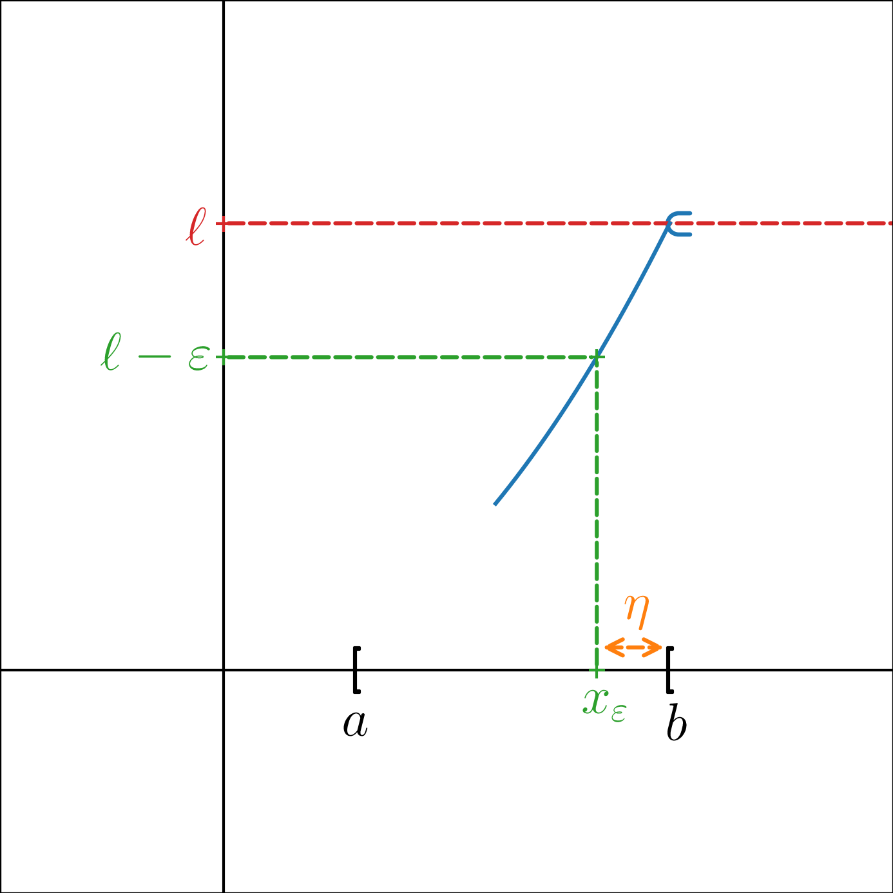
On en déduit, en posant \(\eta = b-x_\varepsilon > 0\) que
\[x \in [a,b[, |x-b| \leq \eta \Longrightarrow \ell-\varepsilon <f(x) \leq \ell \leq \ell+\varepsilon \Longrightarrow |f(x)-\ell| \leq \varepsilon.\]
Donc \(f(x) \xrightarrow[x \to b]{} \ell\).
On a aussi les propriétés suivantes, qui se prouvent de façon similaire.
Soit \(f : [a,b[ \to \mathbb{R}\) décroissante sur \([a,b[\) et minorée sur \([a,b[\).
Alors \(f(x) \xrightarrow[x \to b]{} \ell\) avec \(\ell = \inf_{x\in [a,b[} f(x)\).
Soit \(f : ]a,b] \to \mathbb{R}\) croissante sur \(]a,b]\) et minorée sur \(]a,b]\).
Alors \(f(x) \xrightarrow[x \to a]{} \ell\) avec \(\ell = \inf_{x\in ]a,b]} f(x)\).
Soit \(f : ]a,b] \to \mathbb{R}\) décroissante sur \(]a,b]\) et majorée sur \(]a,b]\).
Alors \(f(x) \xrightarrow[x \to a]{} \ell\) avec \(\ell = \sup_{x\in ]a,b]} f(x)\).
| \(f: [a,b[\to \mathbb{R}\) croissante | \(f: [a,b[\to \mathbb{R}\) décroissante | \(f: ]a,b]\to \mathbb{R}\) croissante | \(f: ]a,b]\to \mathbb{R}\) décroissante |
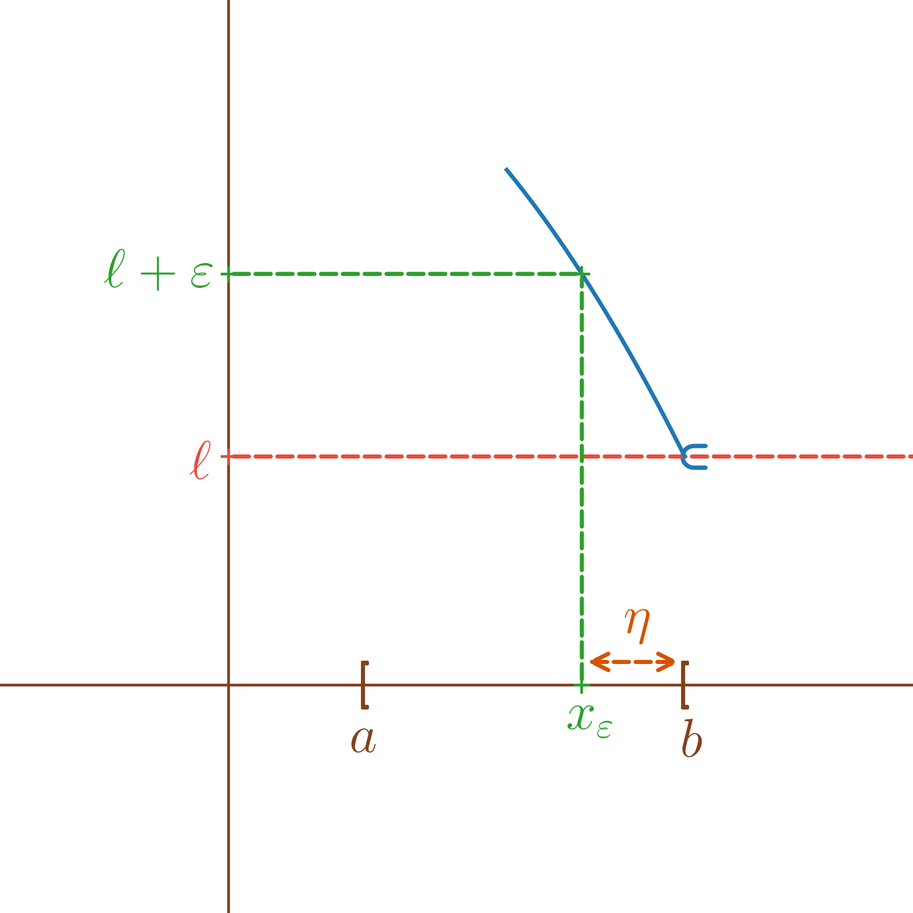 |
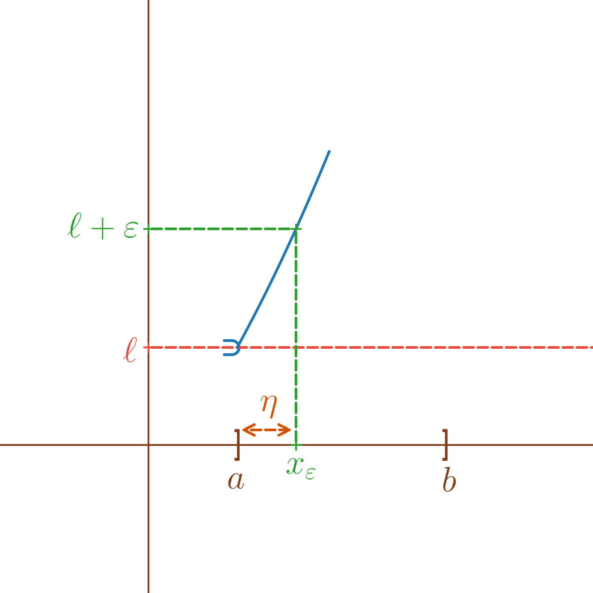 |
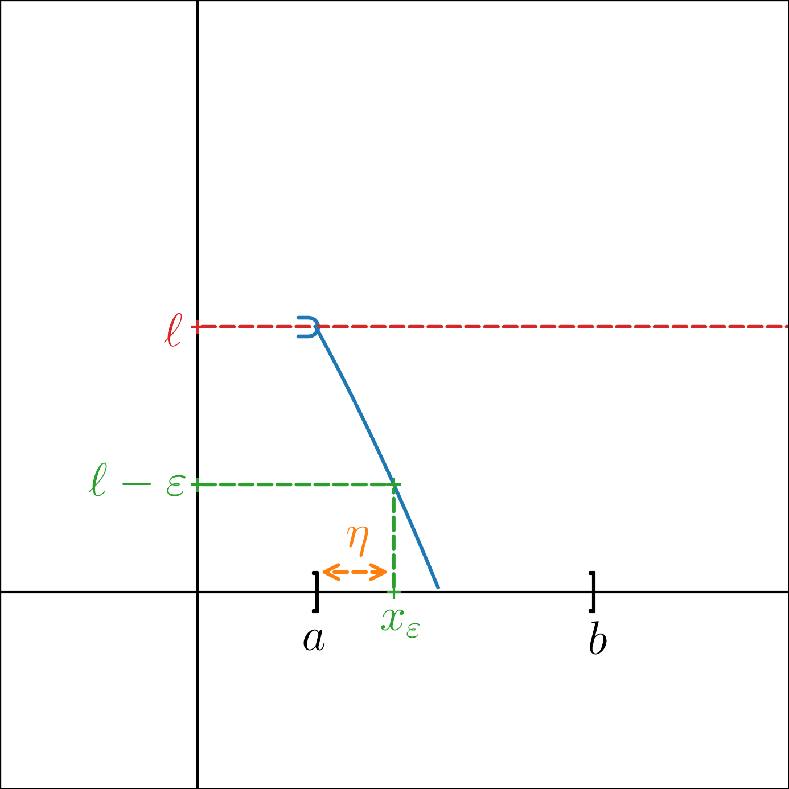 |
Soit \(f : I \setminus \left\{x_0\right\} \to \mathbb{R}\).
On dit que \(f\) tend vers \(+\infty\) en \(x_0\) si \[\forall A \in \mathbb{R}, \exists \eta_A / x\in I \setminus \left\{x_0\right\}, |x-x_0| \leq \eta_A \Longrightarrow f(x) \geq A.\] Dans ce cas, on écrit \(f(x) \xrightarrow[x \to x_0]{} +\infty\).
On dit que \(f\) tend vers \(-\infty\) en \(x_0\) si \[\forall A \in \mathbb{R}, \exists \eta_A / x\in I \setminus \left\{x_0\right\}, |x-x_0| \leq \eta_A \Longrightarrow f(x) \leq A.\] Dans ce cas, on écrit \(f(x) \xrightarrow[x \to x_0]{} -\infty\).
(Limite en \(+\infty\)) Soit \(f : [a,+\infty[ \to \mathbb{R}\) avec \(a\in \mathbb{R}\).
On dit que \(f\) tend vers \(\ell \in \mathbb{R}\) en \(+\infty\) si \[\forall \varepsilon > 0, \exists B_\varepsilon \in \mathbb{R}/ x \in [a,+\infty[, x \geq B_\varepsilon \Longrightarrow |f(x)-\ell| \leq \varepsilon.\] Dans ce cas, on écrit \(f(x) \xrightarrow[x \to +\infty]{} \ell\).
On dit que \(f\) tend vers \(+\infty\) en \(+\infty\) si \[\forall A \in \mathbb{R}, \exists B_A \in \mathbb{R}/ x \in [a,+\infty[, x \geq B_A \Longrightarrow f(x) \geq A.\] Dans ce cas, on écrit \(f(x) \xrightarrow[x \to +\infty]{} +\infty\).
On dit que \(f\) tend vers \(-\infty\) en \(+\infty\) si \[\forall A \in \mathbb{R}, \exists B_A \in \mathbb{R}/ x \in [a,+\infty[, x \geq B_A \Longrightarrow f(x) \leq A.\] Dans ce cas, on écrit \(f(x) \xrightarrow[x \to +\infty]{} -\infty\).
(Limite en \(-\infty\)) Soit \(f : -]\infty,b] \to \mathbb{R}\) avec \(b\in \mathbb{R}\).
On dit que \(f\) tend vers \(\ell \in \mathbb{R}\) en \(-\infty\) si \[\forall \varepsilon > 0, \exists B_\varepsilon \in \mathbb{R}/ x \in -]\infty,b], x \leq B_\varepsilon \Longrightarrow |f(x)-\ell| \leq \varepsilon.\] Dans ce cas, on écrit \(f(x) \xrightarrow[x \to -\infty]{} \ell\).
On dit que \(f\) tend vers \(+\infty\) en \(-\infty\) si \[\forall A \in \mathbb{R}, \exists B_A \in \mathbb{R}/ x \in -]\infty,b], x \leq B_A \Longrightarrow f(x) \geq A.\] Dans ce cas, on écrit \(f(x) \xrightarrow[x \to -\infty]{} +\infty\).
On dit que \(f\) tend vers \(-\infty\) en \(-\infty\) si \[\forall A \in \mathbb{R}, \exists B_A \in \mathbb{R}/ x \in -]\infty,b], x \leq B_A \Longrightarrow f(x) \leq A.\] Dans ce cas, on écrit \(f(x) \xrightarrow[x \to -\infty]{} -\infty\).
Soit \(f : [a,b[\to \mathbb{R}\) croissante avec \(b \in \mathbb{R}\text{ ou }b = +\infty\) alors
Si \(f\) est majorée alors \[f(x) \xrightarrow[x \to b]{} \ell\] avec \(\ell = \sup_{x\in [a,b[}f(x)\).
Si \(f\) est non majorée alors \[f(x) \xrightarrow[x \to b]{} +\infty\] avec \(\ell = \sup_{x\in [a,b[}f(x)\).
Le cas \(f\) majorée est \(b\in \mathbb{R}\) a été traité précédemment.
Dans le cas \(f\) majorée et \(b = +\infty\),
Soit \(\varepsilon > 0\), par caractérisation de la borne supérieure, il existe \(x_\varepsilon \in [a,+\infty[\) tel que \[f(x_\varepsilon) > \ell-\varepsilon.\]
De plus, \(f\) est croissante donc pour \(x \geq x_\varepsilon\), \[f(x) \geq f(x_\varepsilon) > \ell-\varepsilon.\]
On en déduit, en posant \(B_\varepsilon = x_\varepsilon\) que
\[x \in [a,+\infty[, x \geq B_\varepsilon \Longrightarrow \ell-\varepsilon <f(x) \leq \ell \leq \ell+\varepsilon \Longrightarrow |f(x)-\ell| \leq \varepsilon.\]
Donc \(f(x) \xrightarrow[x \to +\infty]{} \ell\)
Dans le cas \(f\) non majorée et \(b \in \mathbb{R}\),
Soit \(A \in \mathbb{R}\), comme \(f\) est non majorée, il existe \(x_A \in [a,b[\) tel que \(f(x_A) \geq A\).
De plus, comme \(f\) est croissante, on a pour tout \(x \geq x_A\), \[f(x) \geq f(x_A) \geq A.\]
Donc avec \(\eta_A = b-x_A > 0\),
\[x\in [a,b[, |x-b| \leq \eta_A \Longrightarrow f(x) \geq A.\]
Donc \(f(x) \xrightarrow[x \to b]{} +\infty\).
Dans le cas \(f\) non majorée et \(b =+\infty\),
Soit \(A \in \mathbb{R}\), comme \(f\) est non majorée, il existe \(x_A \in [a,+\infty[\) tel que \(f(x_A) \geq A\).
De plus, comme \(f\) est croissante, on a pour tout \(x \geq x_A\), \[f(x) \geq f(x_A) \geq A.\]
Donc avec \(B_A = x_A\),
\[x\in [a,+\infty[, x \geq B_A \Longrightarrow f(x) \geq A.\]
Donc \(f(x) \xrightarrow[x \to +\infty]{} +\infty\).
Comme dans ce qui précède, on a aussi la proposition suivante, qui se prouve de façon analogue.
Avec \(b \in \mathbb{R}\text{ ou }b = +\infty\).
Soit \(f : [a,b[\to \mathbb{R}\) décroissante et non minorée alors \[f(x) \xrightarrow[x \to b]{} -\infty.\]
Soit \(f : ]a,b]\to \mathbb{R}\) croissante et non minorée alors \[f(x) \xrightarrow[x \to a]{} -\infty.\]
Soit \(f : ]a,b]\to \mathbb{R}\) décroissante et non majorée alors \[f(x) \xrightarrow[x \to a]{} +\infty.\]
Pour unifier certains résultats vus pour les limites de suites ou fonctions, il est commode d’introduire un nouvel ensemble noté \(\overline{\mathbb{R}}\) (lire "\(\mathbb{R}\) barre"), parfois noté \([-\infty,+\infty]\) ou \(\mathbb{R}\cup \{-\infty,+\infty\}\), obtenu en adjoignant à \(\mathbb{R}\) deux nouveaux éléments notés \(+\infty\) et \(-\infty\).
En pensant aux résultats vus pour la somme ou le produit de deux suites convergeant dans \(\mathbb{R}\) ou tendant vers \(+\infty\) ou \(-\infty\), on est amené à étendre partiellement les opérations de \(\mathbb{R}\) à \(\overline{\mathbb{R}}\).
Relation d’ordre dans \(\overline{\mathbb{R}.}\ \) On étend la relation d’ordre usuelle de \(\mathbb{R}\) à \(\overline{\mathbb{R}}\) en imposant : \[\forall a \in \mathbb{R}, \qquad -\infty < a < +\infty.\]
\(-\infty\) est donc le plus petit élément de \(\overline{\mathbb{R}}\) et \(+\infty\) le plus grand.
Addition dans \(\overline{\mathbb{R}.}\ \)
On pose pour \(a \in \mathbb{R}\) ou \(a = +\infty\), \(a + (+\infty) = +\infty.\)
On pose pour \(a \in \mathbb{R}\) ou \(a = -\infty\), \(a + (-\infty) = -\infty.\)
On ne définit pas la somme \((+\infty) + (-\infty)\) (parce que c’est une forme indéterminée).
Avec ces définitions, si \((u_n)\) tend vers \(l\) et si \((v_n)\) tend vers \(l'\), la suite \((u_n + v_n)\) tend dans \(\overline{\mathbb{R}}\) vers \(l + l'\) pourvu que la somme \(l + l'\) soit définie dans \(\overline{\mathbb{R}}\).
De même pour les limites de fonctions.
Multiplication dans \(\overline{\mathbb{R}.}\ \)
On pose :
pour \(a \in \mathbb{R}^{+*}\) ou \(a = +\infty\), \(a \cdot (+\infty) = +\infty, \text{ et } a \cdot (-\infty) = -\infty,\)
pour \(a \in \mathbb{R}^{-*}\) ou \(a = -\infty\), \(a \cdot (+\infty) = -\infty, \text{ et } a \cdot (-\infty) = +\infty.\)
On ne définit pas \(0 \cdot (+\infty) \text{ ni } 0 \cdot (-\infty)\) (parce que ce sont des formes indéterminées).
Application aux limites.
Avec ces définitions, si \((u_n)\) tend vers \(\ell \in \overline{\mathbb{R}}\) et si \((v_n) \in \overline{\mathbb{R}}\) tend vers \(\ell'\), la suite \((u_n v_n)\) tend dans \(\overline{\mathbb{R}}\) vers \(\ell\ell'\) pourvu que le produit \(\ell\ell'\) soit défini dans \(\overline{\mathbb{R}}\).
De même pour les limites de fonctions.
On peut donc écrire les propositions suivantes.
Soit \(f : ]a,b[ \to \mathbb{R}\) croissante telle que \(a,b \in \overline{\mathbb{R}}\) et \(a < b\) alors \(f\) admet une limite \(\ell_a\in\overline{\mathbb{R}}\) en \(a\) et une limite \(\ell_b\in\overline{\mathbb{R}}\) en \(b\). De plus, \(\ell_a = \inf_{x\in ]a,b[} f(x) \in \overline{\mathbb{R}}\) (éventuellement \(-\infty\)) et \(\ell_b = \sup_{x\in ]a,b[} f(x) \in \overline{\mathbb{R}}\) (éventuellement \(+\infty\)).
Soit \(f : D \to \mathbb{R}, g : D \to \mathbb{R}\) et \(x_0 \in \overline{\mathbb{R}}\) tels que \(f(x) \xrightarrow[x \to x_0]{} \ell \in \overline{\mathbb{R}}\) et \(g(x) \xrightarrow[x \to x_0]{} \ell' \in \overline{\mathbb{R}}\) alors
Pour tout \(\alpha \in \mathbb{R}\), si le produit \(\alpha \ell\) est défini dans \(\overline{\mathbb{R}}\), \(\alpha f(x) \xrightarrow[x \to x_0]{} \alpha \ell\).
Si la somme \(\ell + \ell'\) est définie dans \(\overline{\mathbb{R}}\), \(f(x)+g(x) \xrightarrow[x \to x_0]{} \ell + \ell'\).
Si le produit \(\ell\ell'\) est défini dans \(\overline{\mathbb{R}}\), \(f(x)g(x) \xrightarrow[x \to x_0]{} \ell \ell'\).
En bref,
On a les mêmes propriétés de limites que pour les suites, avec les mêmes formes indéterminées.
Un résultat important est que tout fonction monotone admet une limite (finie ou non) en ses bornes.